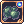
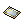
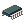
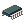
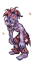

Seandh's Sorcerer Guide
| Sorcerer | |||||||||||||||||||
|---|---|---|---|---|---|---|---|---|---|---|---|---|---|---|---|---|---|---|---|
| Job Base: | Sage / Scholar | ||||||||||||||||||
| Written By: | Seandh | ||||||||||||||||||
| |||||||||||||||||||
Introduction
Note: This guide has not being updated in quite a while and contains heavily outdated information. Take what is written below with a grain of salt regarding newer content- as it is not taken into account just yet.
This is a general PvM (Player Versus Monster or Player Versus Environment) guide for the Sorcerer class. It won’t go into details for PvP (Player Versus Player) for the fact that both the playstyles and builds differ greatly.
The guide encourages the creativity and trial of the player itself. Though I may give equipment and stat build examples, I reinforce that Sorcerer is an extremely flexible class, use that to create your own playstyle and adapt to circumstances accordingly. Our greatest strength is our vast arsenal of possibilities, never forget that.
I will not cover the specific  Spell Fist build, as it also differs greatly from the usual playstyle of the class.
Spell Fist build, as it also differs greatly from the usual playstyle of the class.
Take this guide with a grain of salt, there is no exact correct systematical way to play Sorcerer, and some of my strategies may be very out of the way that would otherwise be optimal.
- Special thanks to Renovo for helping me with a lot of things alongside the creation of this guide and Mayo for making me start it. As well as NovaRO's staff, who reviewed it and made this possible.
Overview
Coming from the Mage branch, Sorcerers specialize in manipulating the 4 "main" elements of the game: Fire, Water, Earth and Wind. They do so by using spells that increase damage dealt by self or allies with elemental and status buffs, alongside various kinds of protective magic.
Having access to a variety of offensive Area-Of-Effect (AoE) magic as well as powerful crowd-control and buffs, Sorcerers are strong both supportively and offensively.
Sorcerers inherit skills from their previous jobs known as Professors or Scholars (Sages, for non-transcendent) which had skills mostly focused on supporting other members with elements, ground-based buffs or protective magic. They were mostly known for the unique ability to switch SP with the skill Soul Change and to negate ground-based spells using
Land Protector, being a vital member for strong party compositions.
General Mechanics
The HP pool of the class is the third lowest at base, having more than Warlocks and Arch Bishops but less than Genetics.
The SP pool of the class is the highest of the game at base, alongside Warlocks and Genetics.
Sorcerer's offensive spells all benefit from an INT modifier (except the poison spells) which add up to the initial damage %, later applied to your MATK. Due to this nature Sorcerers get the most from stacking cast reduction from stats (DEX + INT) instead of % equipment reductions ( Kathryne Keyron Card,
Kathryne Keyron Card,  Crown of Deceit [1]). Getting equipment that boosts INT will benefit you both with a faster cast and extra damage.
Crown of Deceit [1]). Getting equipment that boosts INT will benefit you both with a faster cast and extra damage.
As all offensive skills possess a relatively big cooldown ranging from 2 to 5 seconds, the class does not make much use of  Poem of Bragi or other similar effects that remove global cast delay, because that is not what really limits it to begin with. Cooldown prevents you from spamming the same skills, regardless of global cast reduction.
Poem of Bragi or other similar effects that remove global cast delay, because that is not what really limits it to begin with. Cooldown prevents you from spamming the same skills, regardless of global cast reduction.
While it is very possible to attack and support using the same equipment, skill points limit you greatly on your actions. It is suggested to use NovaRO's Skill Manager NPC at Main Office to save different builds for different purposes. We have access to such things, use them.
Stats
STR – Boosts Weight Limit and ATK.
- Generally you do not want much of this stat, though it is important for carry weight it does not benefit you much more than that. Important to have at least some but do not let it hinder your build.
- Negative status effect resistances: None
- Recommended: 1~31 STR
AGI – Boosts Attack speed, FLEE and some status effect resistances.
- Low priority stat, though this is the one you want the least. Different from our cousins the Warlocks, Sorcerers do not benefit so much from having a good ASPD (Attack Speed) due to high cooldowns on most skills. Unless you plan for a specific play that benefits from it (e.g. FLEE build) keep it at 1.
- Negative status effect resistances: Bleeding, Sleep.
- Recommended: 1~10 AGI
VIT – Boosts MaxHP, effectiveness of HP potions, soft DEF and some status effect resistances.
- A mildly important stat, having a nice amount of VIT is never counter-productive. This is mostly a personal choice so go with what you are comfortable with. If you need protection against status effects take it as base + bonus = 100, it should also give you a nice HP pool to manage.
- Negative status effect resistances: Blind, Curse, Poison, Silence, Stun.
- Recommended: 60~110 VIT
DEX - Boosts your variable cast time speed (Twice as effective as INT), HIT and a small amount of MATK.
- One of the 2 main stats that you must focus on, DEX provides you with immense cast time reduction alongside a small MATK bonus. The go-to stat for this is exactly 120, nothing more, nothing less. You WILL need this stat unless you already have good cast time reductions from equipments.
- Negative status effect resistances: None
- Recommended: 120 DEX
INT - Boosts MATK, variable cast time speed, MaxSP and strengthens skills.
- The bread and butter of the class itself, INT is by far the most important stat that you will focus on. Independent of your build (supportive or offensive) you will always benefit from this. Keep it at 120 and always look out for equipment that adds to it.
- Negative status effect resistances: Blind, Silence, Sleep.
- Recommended: 120 INT
LUK - Boosts ATK/MATK (Every 3), Perfect Dodge, FLEE (slightly) and adds resistance to some status effects
- Overlooked by most people, LUK is actually a very beneficial stat, providing various bonuses that can help you both supportively and offensively. This is another personal choice but I recommend you take at least a bit of it. Just keep in mind to keep your LUK at a number divisable by 3 (30, 60, 93) to get the most out of it.
- Negative status effect resistances: Blind, Curse, Poison, Silence, Sleep.
- Recommended: 30~96 LUK
TIP: Use < /stat+ number > command to allocate stat points quickly ingame.
Element System Basics
All monsters have an element attributed to them. It is of high importance for Sorcerers (and other classes too!) to know them well and acknowledge their possibilites. Feel free to skip through this if you already have the hang of it.
Attack and Defense
Elements work in 2 ways: the defending element and the attacking element.
The defending element is the property of the monster that is receiving the damage.
The attacking element is the property of the skill or attack that is dealing the damage.
The defending element is divided into 4 "levels". It's impact is weaker at level 1 and has a lot more effect on the damage (less or more depending on the attacking element) at higher levels on the final damage calculations.
- Ex: A Wind 4 element monster will receive much more Earth damage when compared to a Wind 1 monster
There are 10 elements in the game:
Neutral, Holy, Shadow, Fire, Water, Wind, Earth, Poison, Undead and Ghost
- Tip: You can easily check a monster's element ingame by using the command @mi (NovaRO feature)
- Example: @mi Familiar
Elemental Tables
Below you can find tables for each level of defending element against an attacking element, where the % applied is the multiplier on the attacker's damage.
| Level 1 | Attacking | ||||||||||
|---|---|---|---|---|---|---|---|---|---|---|---|
| Neutral | Fire | Water | Wind | Earth | Poison | Holy | Shadow | Ghost | |||
| Defending | Neutral | 100% | 100% | 100% | 100% | 100% | 100% | 100% | 100% | 70% | |
| Fire | 100% | 25% | 150% | 100% | 90% | 125% | 100% | 100% | 100% | ||
| Water | 100% | 90% | 25% | 175% | 100% | 100% | 100% | 100% | 100% | ||
| Wind | 100% | 100% | 90% | 25% | 150% | 125% | 100% | 100% | 100% | ||
| Earth | 100% | 150% | 100% | 90% | 25% | 125% | 100% | 100% | 100% | ||
| Poison | 100% | 100% | 100% | 100% | 100% | 0% | 100% | 50% | 100% | ||
| Undead | 100% | 125% | 100% | 100% | 100% | -25% | 150% | -25% | 100% | ||
| Holy | 100% | 75% | 75% | 75% | 75% | 75% | 0% | 125% | 75% | ||
| Shadow | 100% | 100% | 100% | 100% | 100% | 50% | 125% | 0% | 75% | ||
| Ghost | 70% | 100% | 100% | 100% | 100% | 100% | 100% | 100% | 125% | ||
Click [Expand] on the right side to see the other tables.
| Level 2 | Attacking | ||||||||||
|---|---|---|---|---|---|---|---|---|---|---|---|
| Neutral | Fire | Water | Wind | Earth | Poison | Holy | Shadow | Ghost | |||
| Defending | Neutral | 100% | 100% | 100% | 100% | 100% | 100% | 100% | 100% | 50% | |
| Fire | 100% | 0% | 170% | 100% | 90% | 125% | 100% | 100% | 75% | ||
| Water | 100% | 80% | 0% | 175% | 100% | 75% | 100% | 100% | 75% | ||
| Wind | 100% | 100% | 80% | 0% | 175% | 125% | 100% | 100% | 75% | ||
| Earth | 100% | 175% | 100% | 80% | 0% | 125% | 100% | 100% | 75% | ||
| Poison | 100% | 100% | 100% | 100% | 100% | 0% | 100% | 50% | 75% | ||
| Undead | 100% | 150% | 100% | 100% | 100% | -50% | 175% | -50% | 125% | ||
| Holy | 100% | 50% | 50% | 50% | 50% | 50% | -25% | 150% | 50% | ||
| Shadow | 100% | 75% | 75% | 75% | 75% | 25% | 150% | -25% | 50% | ||
| Ghost | 50% | 100% | 100% | 100% | 100% | 75% | 100% | 100% | 150% | ||
| Level 3 | Attacking | ||||||||||
|---|---|---|---|---|---|---|---|---|---|---|---|
| Neutral | Fire | Water | Wind | Earth | Poison | Holy | Shadow | Ghost | |||
| Defending | Neutral | 100% | 100% | 100% | 100% | 100% | 100% | 100% | 100% | 0% | |
| Fire | 100% | -25% | 200% | 100% | 70% | 100% | 100% | 100% | 50% | ||
| Water | 100% | 70% | -25% | 200% | 100% | 50% | 100% | 100% | 50% | ||
| Wind | 100% | 100% | 70% | -25% | 200% | 100% | 100% | 100% | 50% | ||
| Earth | 100% | 200% | 100% | 70% | -25% | 100% | 100% | 100% | 50% | ||
| Poison | 100% | 100% | 100% | 100% | 100% | 0% | 125% | 0% | 50% | ||
| Undead | 100% | 175% | 125% | 100% | 100% | -75% | 200% | -75% | 150% | ||
| Holy | 100% | 25% | 25% | 25% | 25% | 25% | -50% | 175% | 25% | ||
| Shadow | 100% | 50% | 50% | 50% | 50% | 0% | 175% | -50% | 25% | ||
| Ghost | 0% | 100% | 100% | 100% | 100% | 50% | 100% | 100% | 175% | ||
| Level 4 | Attacking | ||||||||||
|---|---|---|---|---|---|---|---|---|---|---|---|
| Neutral | Fire | Water | Wind | Earth | Poison | Holy | Shadow | Ghost | |||
| Defending | Neutral | 100% | 100% | 100% | 100% | 100% | 100% | 100% | 100% | 0% | |
| Fire | 100% | -50% | 200% | 100% | 60% | 75% | 75% | 75% | 25% | ||
| Water | 100% | 60% | -50% | 200% | 100% | 25% | 75% | 75% | 25% | ||
| Wind | 100% | 100% | 60% | -50% | 200% | 75% | 75% | 75% | 25% | ||
| Earth | 100% | 200% | 100% | 60% | -50% | 75% | 75% | 75% | 25% | ||
| Poison | 100% | 75% | 75% | 75% | 75% | 0% | 125% | -25% | 25% | ||
| Undead | 100% | 200% | 150% | 100% | 50% | -100% | 200% | -100% | 175% | ||
| Holy | 100% | 0% | 0% | 0% | 0% | 0% | -100% | 200% | 0% | ||
| Shadow | 100% | 25% | 25% | 25% | 25% | 0% | 200% | -100% | 0% | ||
| Ghost | 0% | 100% | 100% | 100% | 100% | 25% | 100% | 100% | 200% | ||
Skills
Cast times and cooldowns will be considered at the skill's respective max levels below.
Offensive
| Skill Name | Properties | In-Depth |
|---|---|---|
| Psychic Wave | Neutral element*.
7x7 ~ 11x11 AoE, 3 ~ 7 hits total. Cast time: 0.6s + 12s (fixed + variable) 5 seconds cooldown. |
Your primary offensive skill. Highest damage over all others on this list.
*You can change the spell's element according to your elemental spirit Can also be used as a staggering spell, delaying enemy movement. Extremely useful to trigger on-hit effects (e.g. Damage: {[Skill Level x 70 + (INT × 3)] × (Base Level ÷ 100)}% MATK. (per hit)
|
| Water element.
7x7 AoE. Cast time: 7s (variable) 5 seconds cooldown |
Causes Crystallization status effect at (Skill Level x 5 + 5)% chance
No fixed cast time makes it very fast when compared to others, also allowing for instant cast if you reach 100% variable reduction. Can stagger enemies momentarily, due to 5 hits dealt in quick succession. Damage: {[(Skill Level × INT) + (Frost Weapon Level × 200)] × (BaseLv ÷ 100)}% MATK.
| |
| Earth element.
7x7 ~ 9x9 AoE Cast time: 1s + 3s (fixed + variable) 5 seconds cooldown |
Overall a bit less useful than Diamond Dust due to it's 1 second fixed cast time, but it's still a strong spell.
Can stagger enemies slightly, 3 hits dealt in quick succession. Damage: {[(Skill Level × INT) + (Seismic Weapon Level × 200)] × (BaseLv ÷ 100)}% MATK.
| |
| Varetyr Spear | Wind element.
3x3 ~ 9x9 AoE, targeted. Cast time: 1s + 3s (fixed + variable) 5 seconds cooldown |
To be updated.
Causes Stun status effect at (Skill level x 5)% chance Only one with it's max level at 10 and targeted from the main 4 skills. Deals 3 hits in quick succession. Striking level greatly affects it's damage output. At level 10 and with Striking at level 5, deals mildly more damage than Earth Grave or Diamond Dust. Damage: [{Skill Level x INT + (Lightning Loader Level × 50) + (Striking Level x 75)} × (BaseLv ÷ 125)]% MATK (Wildly estimated, not accurate.)
|
|  Cloud Kill | Poison element.
7x7 AoE. Cast time: 3s (variable) 5 seconds cooldown Costs 2 |
Mainly an utility skill. (For poison effect, see - Crowd Control skills)
Can be used as an excellent on-hit trigger, capable of dealing 48 separate hits on it's entire duration. Situational skill and not very viable due to high catalyst cost. More effective if used with Damage: [(Skill Level x 40) x (Base Level ÷ 100)% MATK. |
| Poison element.
3x3 AoE, targeted. Cast time: 6s(variable) 2 seconds cooldown |
Can only be used on Poisoned targets, good as a follow-up to Cloud Kill.
Relatively spammable, can be used as a finisher or between casts if your enemy is getting poisoned again. Very good to use if you have a Guillotine Cross as party member due to poisoning on attack and Venom Impress' debuff, that causes the target to receive increased poison damage. Damage: [(Skill Level x 300 + 1000) x (Base Level ÷ 120)% MATK |

Cast times, cooldowns and AoEs will be considered at the skill's respective max levels below.
Supportive
| Skill Name | Effect | In-Depth |
|---|---|---|
| Striking | Raises ATK and CRIT of party member or self while draining 1 SP/sec over the buff's duration.
60 seconds buff, 2 seconds cooldown. |
ATK given by this skill depends on weapon level of the target and Sorcerer's "Endow" levels. To maximize it's effect, you need to max all endow levels and your target should be using a level 4 weapon.
Skill level affects ATK, CRIT and SP drain of the skill. |
| 7x7 AoE
Heals 3% HP every 3 seconds. 60 seconds duration and 60 seconds cooldown |
Be careful when using it as it also affects monsters (including bosses). It's long cooldown is a painful punishment if you misplace it. Can be used as a great self-sustain skill with Health Conversion as well as to heal entire parties.
The healing aspect of the skill can be boosted to 15% HP every 3 seconds if used with Skill level affects HP recovery, cooldown and duration. | |
| Safety Wall | Places a protective shield on a cell that absorbs melee-type hits. Has a limit for number of hits and damage absorbed.
Lasts for 50 seconds or until hit/damage limit runs out. Costs 1 |
The shield absorbs otherwise deadly hits completely, even if the damage exceeded the shield's limit. Shield's health is affected by skill level, INT and MAX SP of the caster. The max amount of hits absorbed at max level is 11 (attacks can miss and not affect the hit count) and can easily reach over 20.000 damage limit with an early game build, becoming stronger later on.
Skill level affects hit limit, damage limit and duration. |
| Exchanges half of your current SP with half of target's current SP
Fixed cast time of 3 seconds (Reduced by Sacrament) Transcendent Skill |
Useful for keeping DPS' mana bar full at all times, but requires a big SP pool to be effective with other magic classes. Use with Health Conversion for better efficiency and recovery after switching. Can be used on monsters (once per monster) to recover a small amount of SP. | |
| Health Conversion | Consumes 10% of your HP and converts part of it to your SP
Transcendent Skill |
At max level it recovers SP equal to 5% of your max health, more HP = more SP. Using this skill in combination with a healer party member or Skill level affects efficiency of the HP-to-SP conversion. |
| The AoE affected will deny other types of AoE skills. Lasts 5 minutes. 11x11 AoE.
Costs 1 Costs 1 Yellow Gemstone |
A must for a supportive role, can protect a whole party of AoE skills from monsters (some skills will still hit a player with a "splash" effect if they are standing on the edge).
Be careful when using as the skill will deny and remove any AoE spell over it's area, including offensive skills of your own and protective ones such as Pneuma and Safety Wall. Casting will remove Deluge / Skill level affects size(AoE) and duration. | |
| Raises a 5x3 Fog Wall which protects against single target magic and ranged physical damage.
Lasts up to 20 seconds. (40 seconds with Deluge) Transcendent Skill. |
Any single target skill cast at anyone inside the AoE will have a 75% chance to miss.
Incoming normal ranged physical damage will be reduced by 75%. Incoming skill-based ranged physical damage will be reduced by 25% Blinds monsters that go through it. | |
| Magic Rod | Makes you absorb any targeted magic for the duration of the skill, cancels if you move. | Has limited use on PVM, though situationally this skill can be useful.
Skill level affects duration of absorption (up to 1 second at max level). |
| 7x7 AoE.
Adds a +50 ATK/MATK buff to all players standing inside. Lasts up to 5 minutes. Increases all fire damage of players inside by up to 20%. Costs 1 |
The main use of this skill is to buff the party's damage on instances or even for yourself while playing solo (ATK/MATK + fire damage), it is very strong and should be considered on every support build.
Prevents Casting will remove Deluge / Skill level affects duration and strength of buffs given. Recasting the skill while it's active will not consume another | |
| Deluge | 7x7 AoE.
Adds a +15% MaxHP buff to all players standing inside. Lasts up to 5 minutes. Increases all water damage of players standing inside by up to 20%. Costs 1 |
The skill can greatly boost an ally's HP and increase Can be used to boost damage of your Water Psychic Wave and If Casting will remove Skill level affects duration and strength of buffs given. Recasting the skill while it's active will not consume another |
| Violent Gale | 7x7 AoE.
Adds a +15 FLEE buff to all players standing inside. Lasts up to 5 minutes. Increases all wind damage of players standing inside by up to 20%. Costs 1 |
There's not many uses of this skill on PvM, especially support-wise. Though it still has a (situationally) good offensive boost to increase Wind Psychic Wave and Varetyr Spear damage.
FLEE bonus isn't strong, I don't recommend relying on it. Prevents If Casting will remove Deluge / Skill level affects duration and strength of buffs given. Recasting the skill while it's active will not consume another |

Crowd Control
- For status effects information, see: http://irowiki.org/wiki/Status_Effects
| Skill Name | Description | In-Depth |
|---|---|---|
| Chance to put all enemies on a 7x7 AoE in Deep Sleep status.
Chance of success affected by Caster's INT/Job Level and decreased by Target's INT/LUK Does not affect boss monsters. Costs 1 Yellow Gemstone each cast. |
Deep Sleep completely disables the enemy and increases any incoming next damage by 50%, it is very effective combined with burst skills.
Be wary of it's cost, yellow gemstones are the most expensive ones. Keep in mind deep sleep also recovers HP and SP of target rather quickly, use it wisely. (cannot be used on allies) Skill level affects size(AoE), duration of effect, chance of effect and cast time. | |
| 7x7 AoE that Immobilizes all targets.
Duration of effect is decreased by target's STR. Cannot be used on instances. Does not affect boss monsters. |
Very useful when leveling and for defensive purposes, frequently preventing you from being overwhelmed by mobs.
Can be used to help allies if they are being chased or surrounded . Has the tendency to force field and dungeon mobs into teleporting (they are considered stuck by the game), which limits it's offensive uses.
Skill level affects size(AoE), duration of effect and cast time. | |
| 3x1 AoE that deals damage and knockbacks enemies that come into contact.
Lasts for 14 seconds or until 14 hits are dealt (each cell has it's own hit limit). |
Extremely useful defensive spell, even on high levels.
Although the skill's damage is weak it can be used as an effective on-hit triggering spell for effects that occur on magic damage. (e.g. Kronos' boost or Skill level affects number of hits and duration. | |
| Spider Web | Immobilizes a single target, Reduces it's flee by 50% and doubles incoming fire damage.
Can have up to 2 active at a time. Cannot be used on instances. Lasts for 8 seconds or until target is struck by fire damage. Transcendent Skill. Costs 1 Cobweb each cast. |
Similar to Any target affected by it will receive a whooping 2.5x fire damage bonus for the next fire attack, but will also remove the effect. Can be used on boss monsters but may still trigger teleportation. |
| Interrupts any spell being cast, absorbing SP and HP (Only at max level).
Boss monster chance is reduced to 10% effect chance. |
Useful to attempt to stop long, strong casts of bosses like Comet. If you have instant cast, you can spam this skill at very high speeds, increasing the chances to success.
Skill level affects % SP absorbed and at max level gives damage and HP leech (2% damage, 1% hp leech). | |
| Cloud Kill | Applies Poison to a 7x7 AoE, reducing DEF, disabling SP regeneration and dealing % HP damage.
Poison from this skill ignores status immunity and will trigger as long as target is inside it's AoE (including on poison-property monsters). Does not affect boss monsters. Costs 2 |
Poison effect is very situational so I wouldn't recommend using it for the effect alone.
It ensures that you can use Skill level affects duration, size(AoE), cast time and damage (of hits, not from the poison). |
Passives and Misc.
| Skill Name | Effect | In-Depth |
|---|---|---|
| Self buff that reduces incoming damage according to your current SP. Drains a % of SP every time the user gets hit.
Lasts for 5 minutes or until SP is depleted. |
Every hit will take out your SP, it is not recommended using against large groups of enemies or fast-hitting mobs, as it will drain you too fast and too constantly. Keep your SP bar healthy to get the most out of it's protection.
Damage reduction ranges from 30% reduction at 80% or more SP to 6% reduction at 20% SP or less. | |
| Free Casting | Passive that allows movement while casting | You will always have something to use this with. Unless you are going for a very specific strategy that will not benefit from it, take at least at level 1. The "gap" of moving after casting is better with this skill as you can start moving before your cast ends, useful even for fast-cast builds to get a better reaction grip.
Skill level affects movement speed (when casting, for a max of 75%) and ASPD (when casting, for a max of 100%). |
| Memorize | Self buff that reduces variable cast time by 50% for the next 5 skills.
5 seconds of cast time, cannot be reduced. Lasts until user logs out or 5 skills are cast. Transcendent Skill |
Memorize's effect stacks in equipment reduction, meaning that if you got at least 50% variable cast reduction from equipments it will provide you with instant variable cast for the duration.
If you are using this skill keep in mind that any kind of skill will drain it's effect, including skills that are instantaneous like Sight. Keep a cast count on your mind while using it to get the most out of it's limits and avoid self-buffing while you have it active. Requires a lot of skill points. Very useful alongside |
| Flame Launcher | Changes target's weapon element to Fire
Consumes 1 Lasts for up to 30 minutes. Switching weapons removes the effect. |
Can only be cast on party members or self.
Endows are overwritten by The levels of each endow affect the ATK bonus from Striking greatly. Skill level affects duration of effect (10 ~ 30 minutes).
|
| Frost Weapon | Changes target's weapon element to Water
Consumes 1 Lasts for up to 30 minutes. Switching weapons removes the effect. | |
| Lightning Loader | Changes target's weapon element to Wind
Consumes 1 Yellow Wish Point each cast Lasts for up to 30 minutes. Switching weapons removes the effect. | |
| Seismic Weapon | Changes target's weapon element to Earth
Consumes 1 Lasts for up to 30 minutes. Switching weapons removes the effect. | |
| Dragonology | Passive that adds up to 10% damage and 10% resistance against Dragon monsters.
At max level also gives +3 INT. |
The most important benefit is the permanent +3 INT bonus.
This skill is great for offensive builds as every INT bonus is welcome to your addition but keep in mind this skill takes out a lot of skill points. I do not recommend this for support builds as you need those. Skill level affects Dragon race bonuses and gives +3 INT at max level. |
| Advanced Book | Passive that adds up to 5% ASPD and 30 ATK if used with Book weapons. | Mostly a requirement skill on it's core, only benefiting specific builds. The bonus from it is quite welcome if you choose to use Books.
Skill level affects ASPD and ATK bonuses. |
| Self buff that causes you to leave a trail of damaging magic when you walk.
12 seconds duration Affects up to 16 cells. |
Damage is not very good on itself, dealing 525% MATK at max level, but can be decent if used against mobs that are weak to the spell's element.
Surprisingly useful for mobbing and luring as well as slowing enemies down with the stagger from hits. You'd mostly want to use this not as a damage spell, but rather as a trigger to on-hit effects and as crowd control for melee mobs. Skill level affects damage and numbers of cells applied. |

Insignia System
Sorcerers Have access to 4 insignias, one representing each of the 4 main elements:  Fire Insignia,
Fire Insignia,  Water Insignia,
Water Insignia,  Wind insignia and
Wind insignia and  Earth Insignia.
Earth Insignia.
To simplify, these insignia skills are cast on a 3x3 area for various buffs and debuffs, according to level used (1-3) and type of insignia, mentioned above. This effectively gives you 12 effects to mess around with, it's very confusing at first but it is an essential part of playing Sorcerer.
Global Effects
Before going in depth about the individual effects, all insignias have base rules. These effects are applied to every and each insignia independent of level:
- They have an AoE of 3x3 cells, duration of 60 seconds and 60 seconds cooldown.
- Insignias will affect everything inside their AoE, including boss monsters.
- Any entity inside an insignia will have incoming damage of the corresponding opposite element buffed by 50%. Standing inside an insignia as a defensive measure is not always the best option.
- An entity of an element (monster element or player's armor element) will recover 1% HP every 5 seconds if standing on same element insignia, and will lose 1% HP every 5 seconds if standing on opposite element insignia.
- Example: A Poring (Water) is standing inside a
 Wind Insignia, it will lose 1% HP every 5 seconds.
Wind Insignia, it will lose 1% HP every 5 seconds. - Example 2: A Wolf (Earth) is standing inside an
 Earth Insignia, it will recover 1% HP every 5 seconds.
Earth Insignia, it will recover 1% HP every 5 seconds.
- Example: A Poring (Water) is standing inside a
The elements are affected as follows: Fire > Earth > Wind > Water > Fire > ...
Catalysts
Insignias consume "points" every time they are cast. The amount of points used is related to the skill level (level 1 requires 1 point | level 2 requires 2 points | level 3 requires 3 points). They can be bought at Novaro's Main Office from the NPC named Master of Elements.
 Fire Insignia uses
Fire Insignia uses  Scarlet Points
Scarlet Points Water Insignia uses
Water Insignia uses  Indigo Points
Indigo Points- Wind Insignia uses Yellow Wish Points
- Earth Insignia uses
 Lime Green Points.
Lime Green Points.
Individual Effects
| Level 1 | Boosts Ventus' ATK by 20%, Doubles Ventus' HP and SP Regen. | Boosts Aqua's ATK by 20%, Doubles Aqua's HP and SP Regen. | Boosts Agni's ATK by 20%, Doubles Agni's HP and SP Regen. | Boosts Tera's ATK by 20%, Doubles Tera's HP and SP Regen. |
|---|---|---|---|---|
| Level 2 | ATK + 10%
Forces weapon to wind property ASPD + 10% |
ATK + 10%
Forces weapon to water property Boosts incoming heals by 10% |
ATK +10%,
Forces weapon to fire property ATK + 50 |
ATK + 10%
Forces weapon to earth property MaxHP +500, DEF +50. |
| Level 3 | Increases Wind property magic damage by 25%.
-50% global cast delay for Wind property magic |
Increases Water property magic damage by 25%.
-30% global variable cast Time for Water property magic. |
Increases Fire property magic damage by 25%.
+50 MATK |
Increases Earth property magic damage by 25%.
MaxSP +50, MDEF +50 |
Elemental Spirit System
Sorcerers have access to summons which help them with various buffs and effects. They each represent one of the 4 core elements:
 Agni (Fire),
Agni (Fire),  Aqua (Water),
Aqua (Water),  Ventus (Wind) and
Ventus (Wind) and  Tera (Earth).
Tera (Earth).
We will be calling them Elementals. They each have their own benefits and styles, choose the ones best suited for the situation.
Spirit Control
You will use  Spirit Control to change the elemental's state. Each level used will have different effect.
Spirit Control to change the elemental's state. Each level used will have different effect.
- Has a fixed cooldown of 5 seconds and costs 10 SP at all levels.
 Spirit Control Level 1: Passive Mode (Various buffs to the Player)
Spirit Control Level 1: Passive Mode (Various buffs to the Player)
- Spirit Control Level 2: Defensive Mode (Various buffs to the Player)
- Spirit Control Level 3: Offensive Mode (Elemental will attack any eligible target, autocasts their own skills.)
- Spirit Control Level 4: Destroys current elemental (Self-explanatory)
- Repeated Spirit Control: Idle Mode (Allows Natural HP and SP regen)
Secondary Skills
| Skill Name | Effect | In-Depth |
|---|---|---|
| Passive. Increases Elemental's HP, SP and ATK.
Lowers SP consumption from Elementals being active. |
Useful in it's own ways, it depends more on the player to get it or not. Elementals are often hit by AoE cast from enemies, this increases their longevity. | |
| Spirit Cure | Consumes 10% HP/SP of caster to recover the same amount for the Elemental. | Not viable. You got other ways of healing your Elemental and this is an extremely inefficient way of doing it. Use Warmer and Soul Exchange instead. |
| Elemental Action | Forces Elemental to use one of their offensive mode spells regardless of state.
Does not change Elemental to Offensive state. |
Mostly a for fun or extra skill, costs 50 sp and has a long 5 seconds cooldown.
It's not really viable for damaging. Using it also consumes your Elemental's SP rather quickly. |
| Sacrifices the Elemental to cast Pneuma and Safety Wall on all party members on screen.
Costs 1 |
Extremely powerful but also extremely situational.
Be careful when casting on parties as you will most likely have a tank near the monster(s) and the Pneuma's effect of Elemental Shield may hinder your party's ranged attackers by protecting the enemy as well. Cannot be spammed due to Elementals' long cooldowns. Use wisely. |
General Knowledge
Before we get to the (very extensive) individual buffs and effects list, here are the general rules that make it easier to remember what each state and level do.
- Elementals consume the caster's SP continuously after being cast and their SP is continuously drain while they are at Passive or Offensive modes.
- Elementals have a maximum time limit according to their level: level 1 Elementals last up to 10 minutes, level 2 Elementals last up to 15 minutes and level 3 Elementals last up to 20 minutes.
- A level 2 Elemental at defensive mode will increase your resistance of their element by 100%, while decreasing the resistance to the opposing element by 100%.
- Elemental's stats are mildly affected by yours (including bonuses).
- Elementals are treated just like party members and can receive skill effects from yourself or other players (e.g. You can ask your party's Arch Bishop to use Heal on your Elemental if they are at low HP) you can use this to refill their SP bar if they happen to run out with your
Soul Change.
- Elementals are treated just like party members and can receive skill effects from yourself or other players (e.g. You can ask your party's Arch Bishop to use Heal on your Elemental if they are at low HP) you can use this to refill their SP bar if they happen to run out with your
- Any Elemental at offensive mode will attack and automatically cast their respective spells and consume their own SP. Their attack is neutral but the spell property is related to their element. The spells are listed below.
Individual Effects
Note: elementals' damage and effect chance buffs are affected by the caster's Job level, it will be considered as 60 (maximum Job level for sorcerers on NovaRO) on the tables below for the calculations. (to be updated)
Aqua
 Level 2 Level 2
|
 Level 3 Level 3
| ||
|---|---|---|---|
| Aqua Play:
+40 MATK.
|
Cooler: +80 MATK. Increases Increases Crystallization chance by 15%.
|
Chilly Air:
+120 MATK.
| |
| Water Screen:
All incoming damage will be redirected to Aqua.
Enables 1.000 HP recovery every 10 seconds on player. |
Water Drop:
+100% Water resistance. -100% Wind resistance. |
Water Barrier:
Casts a 3x3 barrier centered on the player. Barrier effect:
| |
| Ice Needle: Low damage, single-target. | Water Screw: Decent damage, 3x3 AoE.
Water Screw Attack: Decent damage, single-target. |
Tidal Weapon: Very high damage, single-target.
Tidal Weapon: changes Sorcerer's and Aqua's weapon to Water Property for a short time. |
Agni

Tera

Ventus
 Level 2 Level 2
|
 Level 3 Level 3
| ||
|---|---|---|---|
| Gust:
+5 ASPD. Decreases fixed cast time by 1 second.
|
Blast:
+5 ASPD. Decreases fixed cast time by 1 second. Increases |
Wild Storm:
+5 ASPD. Decreases fixed cast time by 1 second. Player autocasts Level 5 | |
| Wind Step:
+100% Movement Speed
+50% FLEE |
Wind Curtain:
+100% Wind resistance. -100% Earth resistance. |
Zephyr:
Creates a 3x3 barrier centered on the player. Barrier effect:
| |
| Wind Slash: Low damage, single-target. | Hurricane: Low damage, 3x3 AoE.
Hurricane Attack: Decent damage, single-target. |
Typhoon Mist: Very high damage, single-target.
Typhoon Mist Attack: High damage, single-target. |
- **Damage is additive with the skills' base. (e.g. it is: 300% + 60%, not: 300% * 60%)
Equipment
I will list only the core/recommended equipments, you should change them as your personal choice goes as long as it fits your playstyle.
Click the [Expand] button on the right side to see each section.
Early Game
When you are just starting the class and still leveling, you can use the Eden Equipment quests to level up and acquire the pieces of the set below, very good for fresh starters:
Eden Equipment "Combo" - ( Eden Group Hat II [1] +
Eden Group Hat II [1] +  Eden Group Armor +
Eden Group Armor +  Eden Group Manteau II +
Eden Group Manteau II +  Eden Group Boots IV) -
Eden Group Boots IV) -
113 DEF | +12 FLEE | 10% Neutral element resistance | +500 MaxHP | +50 MaxSP | +5 MDEF | +1 STR/AGI/VIT/DEX/INT | +28% HP recovery rate | +12% SP recovery rate | Small chance to gain +10 ATK/MATK while dealing physical/magical damage | 113 DEF.
It often beats most gear available for early levelings.
Though it is not a real "combo" (there's no extra bonuses for wearing them all) it is still good and very simple to obtain. Through the quests you start out with slightly weaker versions of each equipment, and obtain "upgraded" ones as you progress.
You can also obtain the  Eden Staff mentioned on the weapons section below through the same set of quests.
Eden Staff mentioned on the weapons section below through the same set of quests.
Check out Equipment Quests for more details.
Recommended to use one of these 2 combos afterwards:
Airship Combo - ( Cloak of Airship [1] +
Cloak of Airship [1] +  Boots of Airship +
Boots of Airship +  Armor of Airship) - Requires level 125+
Armor of Airship) - Requires level 125+
I cannot stress this enough, this is probably the strongest and easiest to obtain gear early game, it's easy to get and powerful to use (I miss the movement bonus to this very day). If you are starting NovaRO in general, use it. It will hold it's place for quite some time, until you get better equipment. The only downside being lack of slots on armor and shoes, but that's not a real big issue. Full combo gives:
+1 all stats | +1000 HP | +100 SP | +10 MDEF | +25% HP and SP | Increased Movement Speed | 10% Neutral element resistance | 20% Cast time reduction | 10% Attack Speed | +1 Agi | 151 DEF. | Garment Slot.
If you choose to use this combo, keep your Wind Whisper from the level 99 box, it's pretty good at early levels.
- Acquired by killing monsters at Airship Assault instance.
OR
Gray Combo - ( Gray Helmet [1] +
Gray Helmet [1] +  Gray Robe [1] +
Gray Robe [1] +  Gray Cloak [1] +
Gray Cloak [1] +  Gray Boots [1]) - Requires level 120+
Gray Boots [1]) - Requires level 120+
Another strong early game gears combo, though it's harder to obtain compared to the Airship Set. Gives a lot of DEF and resistances, as well as a nice offensive bonus. Takes your headgear spot, which is bad but doesn't matter much early game. Has slots on every piece. Full combo gives:
33% Holy element resistance | 15% Neutral Resistance | +25% HP and SP | +10% MATK | 160 DEF. | All Slotted.
(Used values of Holy resistance assuming the player is using a +4 set, it's increased according to refine rate.)
- Acquired by trading Gray Shards dropped by monsters for gear at Ghost Palace instance.
Shields
 Round Buckler [1] - Easy to obtain, overall good choice. (Level 22, Trans)
Round Buckler [1] - Easy to obtain, overall good choice. (Level 22, Trans)
- Obtained by killing Orc Warriors or Stalactic Golems.
 Gray Shield [1] - Easy to obtain, very high DEF, huge holy element resist. (Level 120)
Gray Shield [1] - Easy to obtain, very high DEF, huge holy element resist. (Level 120)
- Obtained at Ghost Palace instance.
 Orlean's Server [1] - Requires a bit of effort to obtain, but has a nice DEF and a welcome combo bonus (combo with
Orlean's Server [1] - Requires a bit of effort to obtain, but has a nice DEF and a welcome combo bonus (combo with  Orlean's Glove). (Level 55, Trans)
Orlean's Glove). (Level 55, Trans)
- Drops from Aliza, recommended to buy from other players.
Weapons
 Arc Wand [1] - A generally good start option. (Level 24)
Arc Wand [1] - A generally good start option. (Level 24)
- Can be bought from NPCs
- Eden Staff - if you can, do the quests and take these, the "III" version is better than most of the weapons accessible early game. (Level 26~60)
- Obtained by doing the eden equipment quests, for more info: Equipment Quests
 Thanatos Staff [1] - A bit harder to obtain, but it's more than worth it. Provides a great offensive boost and a nice poking reward. Go for
Thanatos Staff [1] - A bit harder to obtain, but it's more than worth it. Provides a great offensive boost and a nice poking reward. Go for  Thanatos Two-Handed Staff [1] if you want more damage. (Level 120)
Thanatos Two-Handed Staff [1] if you want more damage. (Level 120)
- Obtained at Ghost Palace instance.
 Laphine Staff - Generally good staff, but nothing too special about it. (Level 100, Trans)
Laphine Staff - Generally good staff, but nothing too special about it. (Level 100, Trans)
- Dropped by Medusa.
 Survivor's Rod [1] - Generally good staff, was very known on pre-renewal. (Level 24)
Survivor's Rod [1] - Generally good staff, was very known on pre-renewal. (Level 24)
- INT version is obtained by killing Bloody Knight, DEX version is obtained by killing Kiel D-01 or Entweihen Crothen (Endless Tower)
- Mental Stick [1] - Good staff to give you a better early game, it provides a cast reduction for psychic wave which can help you while leveling your character. Is relatively simple to obtain, though I wouldn't recommend using this later on the game. (Level 102)
- Drops from Pom Spider or Celia.
Accessories
- Belt [1] - Good to act as a card slot early game. (Level 24)
- Can be bought from NPC
 Clip [1] - Good to act as a card slot early game. (No level requirements)
Clip [1] - Good to act as a card slot early game. (No level requirements)
- Dropped by Dragon Fly
- Glove [1] - Gives DEX, relatively simple to get. (Level 90)
- Dropped by Ancient Mummy and Sting
- Int Gloves [1] - A bit harder to get, but quite accessible. Gives a tiny early game boost. (Level 100)
- Obtainable by doing Splendide Quests (http://irowiki.org/wiki/Eclage_Daily_Quests being the most common choices) and exchanging the acquired coins for the gloves at Eclage 64/95 with the NPC named Armor Merchant Naphara, each accessory costs 10 coins.
- You can slot it with a chance of failure for 5 coins with the NPC named Slot Expert Nattuer. For more info, see: http://irowiki.org/wiki/Eclage
Cards
-  Phen Card (Accessory) - Your top priority for a card early game. Uninterruptible cast ensures that you can level without much trouble. The cast penalty hurts but it's more than worth it.
 Andre Egg Card (Shield) - A nice card to add some MaxHP and relatively easy to come by.
Andre Egg Card (Shield) - A nice card to add some MaxHP and relatively easy to come by.
 Isilla Card (Headgear) - A very important card for sorcerers, can be triggered very easily by the use of offensive skills and has a very good INT bonus, I recommend you try to get this soon as it helps a lot with leveling and farming.
Isilla Card (Headgear) - A very important card for sorcerers, can be triggered very easily by the use of offensive skills and has a very good INT bonus, I recommend you try to get this soon as it helps a lot with leveling and farming.
 Bloody Butterfly Card (Accessory) - If you have no means to get a Phen card, try to get this instead. Though a mildly inferior version, it still can be used effectively.
Bloody Butterfly Card (Accessory) - If you have no means to get a Phen card, try to get this instead. Though a mildly inferior version, it still can be used effectively.
 Scaraba Card (Accessory) - Great card to boost your MATK, if you need more damage. It isn't as easy as the others to obtain early on, though.
Scaraba Card (Accessory) - Great card to boost your MATK, if you need more damage. It isn't as easy as the others to obtain early on, though.
 Raydric Card (Garment) - Bread and butter for resistances, reduces damage of normal attacks from monsters.
Raydric Card (Garment) - Bread and butter for resistances, reduces damage of normal attacks from monsters.
 Pupa Card (Armor) - Easy to obtain and provides a nice HP bonus, very good to use to level up.
Pupa Card (Armor) - Easy to obtain and provides a nice HP bonus, very good to use to level up.
Armor
 Orleans' Gown [1] - If you choose not to use any combo and not get a Phen Card, this will help you with cast reduction very early and is relatively simple to obtain. (Level 55, Trans)
Orleans' Gown [1] - If you choose not to use any combo and not get a Phen Card, this will help you with cast reduction very early and is relatively simple to obtain. (Level 55, Trans)
- Drops from Banshee.
- Do not bother with mid and lower headgears early game, they are designed for minmaxing and so their cost-effectiveness is just not worth it here.
Mid Game
Pocket Combo ( Pocket Watch [1] + Memory Book [1] + Monocle [1]) - Level 80+
Pocket Watch [1] + Memory Book [1] + Monocle [1]) - Level 80+
Great MATK boost, not so hard to obtain and it's usefulness is hard to beat. Full combo stats are:
+1 INT | MDEF +2 | HP and SP recovery +15% |+7% MATK | Accessory, Shield and Mid-Headgear Slot.*
*Accessory and shield can be used as no-slot version, not recommended.
Armor
 Diabolus Robe [1] - Relatively easy to obtain, provides a nice MATK bonus needed on early game, without bothering your money much. Can receive a Hidden Enchant. Use with
Diabolus Robe [1] - Relatively easy to obtain, provides a nice MATK bonus needed on early game, without bothering your money much. Can receive a Hidden Enchant. Use with  Diabolus Ring [1]. (Level 60, Trans)
Diabolus Ring [1]. (Level 60, Trans)
- Dropped by Satan Morroc or Wounded Morroc, recommended to buy from players.
- Hero Magic Coat [1] - A bit harder, but also relatively accessible, provides one of the (if not the) best collection of stats for the class. Boosting your main skills, as well as HP, SP, MATK and FLEE. Also gives the very much needed uninterrupted cast. If you have means to get one, do it. (Level 160)
- Obtained at Bios Island or Morse's Cave.
Shield
 Valkyrja's Shield [1] - Never was a bad option, provides great resistance against multiple elements and MDEF. (Level 65)
Valkyrja's Shield [1] - Never was a bad option, provides great resistance against multiple elements and MDEF. (Level 65)
- Dropped by Valkyries, recommended to buy from other players.
 Immune Shield [1] - Neutral resistance helps a lot, especially if you are taking normal attacks from mobs. Good to refine. (No level requirement)
Immune Shield [1] - Neutral resistance helps a lot, especially if you are taking normal attacks from mobs. Good to refine. (No level requirement)
- Can be obtained efficiently through Monster Hunter.
- Orlean's Server [1] - If you choose so, use it with Orlean's Gloves [1] for the small combo bonus, it's a good shield even on this part of the game. (Level 55, Trans)
- Drops from Aliza.
Weapon
- Thanatos Staff [1] - Believe it or not, this still has it's fair uses here. Thana Staves are strong even at later levels on the game. (Level 120)
- Obtained at Ghost Palace.
 Piercing Staff - Great on it's own but is a bit limited due to lack of scaling (No enchantments, lvl 3 weapon) but it still is a great choice for a budget damage build. You can use it until you get something stronger. (Level 70, Trans)
Piercing Staff - Great on it's own but is a bit limited due to lack of scaling (No enchantments, lvl 3 weapon) but it still is a great choice for a budget damage build. You can use it until you get something stronger. (Level 70, Trans)
- Dropped by Kasa
 Thorn Staff of Darkness - Hard to obtain and expensive, with a big bonus. It makes one of the strongest MATK combos if used with Skull Cap. Can be enchanted at Malangdo¹. (Level 75, Trans)
Thorn Staff of Darkness - Hard to obtain and expensive, with a big bonus. It makes one of the strongest MATK combos if used with Skull Cap. Can be enchanted at Malangdo¹. (Level 75, Trans)
- Dropped by Entweihen Crothen (Endless Tower)
- Kronos - Not so hard to obtain, provides several benefits. INT, plenty of MATK and a sweet damage and SP effect. Good to refine. Can be enchanted at Malangdo¹. (Level 50, Trans)
- Dropped by Dark Lord, common loot from High Weapon Box. Recommended to buy from other players.
 Chilly Spell Book [2] - Great choice for cost-efficiency, can be refined and used alongside
Chilly Spell Book [2] - Great choice for cost-efficiency, can be refined and used alongside  Faithful Manager Card for a strong MATK boost. Can be enchanted for a risk of breaking. Greatly benefits some specific builds, may never be a bad choice. (Level 100)
Faithful Manager Card for a strong MATK boost. Can be enchanted for a risk of breaking. Greatly benefits some specific builds, may never be a bad choice. (Level 100)
- Obtained on Wolfchev's Laboratory or dropped by Professor Celia. Recommended to buy from other players.
 Crimson Rod [2] - The rod that grows stronger as your character does, it's a very solid choice though it may not be so easy to obtain. It can be carried even throughout the late-game. Use the card slots with Essences of Evil or race-based magic damage cards. (Level 70)
Crimson Rod [2] - The rod that grows stronger as your character does, it's a very solid choice though it may not be so easy to obtain. It can be carried even throughout the late-game. Use the card slots with Essences of Evil or race-based magic damage cards. (Level 70)
- Fortune Sword - Very good to use while supporting, giving you a nice defensive bonus. Can be enchanted at Malangdo¹. (Level 24)
- Dropped by Phreeoni and Whikebain
- Moonlight Dagger - Very good for supporting, gives a healthy MaxSP bonus. Can be enchanted at Malangdo¹. (Level 36)
- Drops from Assassin Cross Eremes and from Moonlight Flower (low chance). Recommended to buy from other players.
Garment
- +?
 Giant Snake Skin [1] - The bread and butter of current renewal meta, good combo with Temporal Boots. If you aim to get these, try not to burn your money or efforts on a perfect one, but try to get a GSS which has at least one INT and one DEX enchant. I'd recommend to buy this one instead of farming it yourself. (No level requirement)
Giant Snake Skin [1] - The bread and butter of current renewal meta, good combo with Temporal Boots. If you aim to get these, try not to burn your money or efforts on a perfect one, but try to get a GSS which has at least one INT and one DEX enchant. I'd recommend to buy this one instead of farming it yourself. (No level requirement)
- Obtained at Faceworm's Nest.
- +?
- +7
 Heroic Backpack [1] - Usually benefits more other classes, but still has it's fair place on a Sorcerer's Arsenal. (No level requirement)
Heroic Backpack [1] - Usually benefits more other classes, but still has it's fair place on a Sorcerer's Arsenal. (No level requirement)
- Can be obtained efficiently through Monster Hunter.
- +7
 Nyddhoggr's Shadow Garb [1] - Excellent choice as a supportive gear, gives you both resistance and MaxSP. (Level 90, Trans)
Nyddhoggr's Shadow Garb [1] - Excellent choice as a supportive gear, gives you both resistance and MaxSP. (Level 90, Trans)
- Obtained through Nyddhogr's Nest but recommended to buy from players, for more info see: http://irowiki.org/wiki/Nidhoggur's_Nest.
Shoes
 Variant Shoes - If you chose to go support way, this is probably the best shoes you can get (Assuming you are using Nydd Garb as well), huge SP and HP bonus. For the best of it, do not refine this item. (Level 85, Trans)
Variant Shoes - If you chose to go support way, this is probably the best shoes you can get (Assuming you are using Nydd Garb as well), huge SP and HP bonus. For the best of it, do not refine this item. (Level 85, Trans)
- Obtained by killing Beelzebub (recommended to buy from players).
- You could use the alternative
 Enhanced Variant Shoes if you have a nice footgear card, but I do not recommend as the bonuses usually are not good enough.
Enhanced Variant Shoes if you have a nice footgear card, but I do not recommend as the bonuses usually are not good enough.
- Obtained efficiently through Monster Hunter.
 Temporal INT Boots [1] - Not the most optimal boots choice, but still a strong one. Shines when used in combination with Ventus or Sacrament for reduced fixed cast time. Provides many benefits when combined with G.S.S. For enchants aim for INT/Spell as base. Lucky Day or Runaway Magic as offense; Speed of Light or Muscular Endurance for defense. (Level 99, 3rd job)
Temporal INT Boots [1] - Not the most optimal boots choice, but still a strong one. Shines when used in combination with Ventus or Sacrament for reduced fixed cast time. Provides many benefits when combined with G.S.S. For enchants aim for INT/Spell as base. Lucky Day or Runaway Magic as offense; Speed of Light or Muscular Endurance for defense. (Level 99, 3rd job)
- Obtained through Old Glast Heim, for more info see: Temporal Boots.
 Temporal DEX Boots [1] - Recommended Choice ; Negates a big part of your fixed cast (need 120 dex). You can rarely do a build wrong if you are using it. Provides many benefits when combined with G.S.S. Same enchant scope as INT boots.
Temporal DEX Boots [1] - Recommended Choice ; Negates a big part of your fixed cast (need 120 dex). You can rarely do a build wrong if you are using it. Provides many benefits when combined with G.S.S. Same enchant scope as INT boots.
- Obtained through Old Glast Heim, for more info see: Temporal Boots. (Level 99, 3rd job)
Accessories
- Orlean's Gloves [1] - Not so hard to obtain, solid choice as it's one of the best accessories. Provides MATK, DEX and a slot. Combo with Orlean's Server [1]. (Level 90, Trans)
- Dropped by Bow Guardian (low chance). Recommended to buy from other players.
 Pendant of Harmony - Harder to obtain, eats your STR but gives a big MATK boost as well as nice defensive bonuses. (Level 130)
Pendant of Harmony - Harder to obtain, eats your STR but gives a big MATK boost as well as nice defensive bonuses. (Level 130)
- Obtained at Nightmarish Jitterbug instance.
- Diabolus Ring [1] - Use with Diabolus Robe. (2nd class, Trans)
- Dropped by Freezing Reincarnation and Incarnation of Morroc (Ghost).
- Telekinetic Orb - A good item to quickly boost your damage, it is a great choice to use while leveling. Loses it's usefulness later on but it's still a solid choice. (Level 110)
- Dropped by Celia and Miming(low chance), recommended to buy from other players.
Headgear (Upper)
 Skull Cap [1] - Strong Headgear overall, even stronger when used with TSOD. Good to refine. (Level 10)
Skull Cap [1] - Strong Headgear overall, even stronger when used with TSOD. Good to refine. (Level 10)
- Obtained through Cash Shop or from other players.
 Vibrant Rose [1] - Another strong option, but giving a flat bonus instead. Doesn't need TSOD to be effective. Good to refine. (No level requirement)
Vibrant Rose [1] - Another strong option, but giving a flat bonus instead. Doesn't need TSOD to be effective. Good to refine. (No level requirement)
- Can be enchanted and is obtained at Horror Toy Factory.
Headgear (Lower/Mid)
 Rainbow Scarf - There are not much options to begin with and the benefits aren't great, but they help. Objectively better than Ninja Scroll. (Level 90)
Rainbow Scarf - There are not much options to begin with and the benefits aren't great, but they help. Objectively better than Ninja Scroll. (Level 90)
- 'Obtainable through Cash Shop or from other players.
- Monocle [1] - Same as Rainbow Scarf, provides a mid-headgear slot which is very beneficial.
- Can be obtained by killing Owl Viscount and Owl Marquees. (No level requirement)
- ¹ Malangdo Enchants are special bonuses on weapons that can be applied by using a coin exchange system. For more information see: http://irowiki.org/wiki/Malangdo_Enchants
Cards
 Essence of Evil INT 3 (Any) - This will be one of your main uses for the card slots even later on, the INT + MATK combo is more than welcome for the class. If you have no specific use for a card slot, slap this in. It is usually worth more than most pure MATK cards.
Essence of Evil INT 3 (Any) - This will be one of your main uses for the card slots even later on, the INT + MATK combo is more than welcome for the class. If you have no specific use for a card slot, slap this in. It is usually worth more than most pure MATK cards.
- Chance to be obtained by completing Temple of the Demon God.
- Isilla Card (Headgear) - Still very useful mid game, you will probably have learned to control and benefit more from it's 5-second duration. It's FLEE bonus can be used by certain builds to ensure your safety as well.
 Hodremlin Card (Shield) - Generally good card, provides a universal damage reduction and a small bonus that can help you on tight situations, you can not go wrong with this.
Hodremlin Card (Shield) - Generally good card, provides a universal damage reduction and a small bonus that can help you on tight situations, you can not go wrong with this.
 Sohee Card (Footgear) - Easy to obtain, perfect for multiple objectives as SP is an important part of a Sorcerer. Use it if you think your HP is fine where it stands.
Sohee Card (Footgear) - Easy to obtain, perfect for multiple objectives as SP is an important part of a Sorcerer. Use it if you think your HP is fine where it stands.
 Gold Acidus Card (Footgear) - A bit harder to obtain but still very reasonable, is a good general bonus. Remember to not use this if your footgear is over +4, as it's effect stops after that. Use it if you need a bit of HP and SP boost in conjunction.
Gold Acidus Card (Footgear) - A bit harder to obtain but still very reasonable, is a good general bonus. Remember to not use this if your footgear is over +4, as it's effect stops after that. Use it if you need a bit of HP and SP boost in conjunction.
- Scaraba Card (Accessory) - Still very useful in this time of the game, quite simple and self-explanatory.
 Antique Book Card (Garment) - Best MATK boost for a garment slot, use if you see no need for a resistance card or similar.
Antique Book Card (Garment) - Best MATK boost for a garment slot, use if you see no need for a resistance card or similar.
- Raydric Card (Garment) - Useful on all stages of your playthrough, use if you think you need more protection against normal monsters.
 Agav Card (Armor) - Great MATK boost for your armor slot, easily obtainable. Useful even later on.
Agav Card (Armor) - Great MATK boost for your armor slot, easily obtainable. Useful even later on.
 Essence of Evil DEX 3 (Any) - If you need a better casting time or want to "close" a stat-based cast reduction build (Instacast with Clementia or foods), there's no shame on using EoE DEX 3. Though I wouldn't recommend this for anything else as Sorcerers don't need it for other things.
Essence of Evil DEX 3 (Any) - If you need a better casting time or want to "close" a stat-based cast reduction build (Instacast with Clementia or foods), there's no shame on using EoE DEX 3. Though I wouldn't recommend this for anything else as Sorcerers don't need it for other things.
 Bathory Card (Armor) - Quite the card to be used defensively especially on instances, I recommend you have one of these on a spare armor for runs (namely Old Glast Heim is one of the known uses for it)
Bathory Card (Armor) - Quite the card to be used defensively especially on instances, I recommend you have one of these on a spare armor for runs (namely Old Glast Heim is one of the known uses for it)
 Mangkukulam Card (Armor) - +10% SP on armor is really neat for support builds, just not easy to get and requires you to not kill anything while wearing it, it's penalty is quite harsh for a class with low HP as sorcerer. Works on the endgame as well if used for the support purpose, though I'd recommend wearing an elemental/resist card instead.
Mangkukulam Card (Armor) - +10% SP on armor is really neat for support builds, just not easy to get and requires you to not kill anything while wearing it, it's penalty is quite harsh for a class with low HP as sorcerer. Works on the endgame as well if used for the support purpose, though I'd recommend wearing an elemental/resist card instead.
 Mavka Card (Accessory) - Boosts Fire and Earth magic damage quite a lot, can be used even later on and isn't too complicated to obtain, overall great card on the slot.
Mavka Card (Accessory) - Boosts Fire and Earth magic damage quite a lot, can be used even later on and isn't too complicated to obtain, overall great card on the slot.
 Faceworm Larva Card (Garment) - 15% Neutral resistance alongside a boost to water magic damage (goes well with Giant Snake Skin [1]) , can be used later on and not too complicated to obtain.
Faceworm Larva Card (Garment) - 15% Neutral resistance alongside a boost to water magic damage (goes well with Giant Snake Skin [1]) , can be used later on and not too complicated to obtain.
End Game
Ferlock Combo ( Ferlock's Manteau [1] +  Ferlock's Armor + Ferlock's Boots) - Level 125+
Ferlock's Armor + Ferlock's Boots) - Level 125+
Situational, but in a tanking or supporting role it is surprisingly strong. The need for all parts to be +10 or more makes it extremely hard to put together so it's usually not worth. Full combo stats (assuming every piece at +12):
All Stats +1 |HP + 1500 | SP + 150 | MDEF + 10 |30% HP and SP | Increased Movement Speed | 10% Neutral Resistance |10 FLEE |35% Variable Cast Reduction |+3 AGI | +1 ASPD |+15% Attack Speed | ~170 DEF | Garment Slot
- Obtained by killing Ferlock for the set pieces at Airship Assault.
Chip Combo (+9  Runaway Chip [1] +  Broken Chip 1 [1] +
Runaway Chip [1] +  Broken Chip 1 [1] +  Broken Chip 2 [1]) - Level 100+
Broken Chip 2 [1]) - Level 100+
Strong. It's definitely up there on my to-try list. Requires Runaway Chip to be at +9 or higher to be effective for Sorcerers. Full combo stats (assuming headgear at +9):
+50 HIT | +50 FLEE | +50 MATK | +50 ATK | +10% MaxHP | Increased Movement Speed | +12 INT | +12 STR | All Slotted.
- Obtained on the Last Room instance.
Armor
- Hero Magic Coat [1] - Still one of the best options at the end, use it if you still want the uninterruptible cast even if situationally, or if you want a jack-of-all trades armor. (Level 160)
- Obtained on Bios Island or Morse's Cave.
 Flattery Robe [1] - Offensive armor, chonky MATK bonus as long as you are level 140+ and a slot; If you can refine and enchant it, it is definitely the best choice. Can be used to help achieve permanent instant cast through DEX or INT enchants when refined.
Flattery Robe [1] - Offensive armor, chonky MATK bonus as long as you are level 140+ and a slot; If you can refine and enchant it, it is definitely the best choice. Can be used to help achieve permanent instant cast through DEX or INT enchants when refined.
- Obtained and enchanted using Honor Token (Banquet for Heroes Questline).
- +7 ~ +9
Lava Leather Robe [1] - Beats
Flattery Robe [1] at +9 (not counting enchants) can be used even at lower refine rates. Very solid choice. (Level 175)
- Obtained at Magma Dungeon level 3.
- +7 ~ +9
- Flattery Robe [1] if you have at least ~1100 flat MATK; Beats a
- Obtained with Schwartz's Honor Token (Terra Gloria Questline).
Shield
- +7 ~ +12 Immune Shield [1] - Awesome for resistance against normal attacks, and even some monster skills. (No level requirement)
- Can be obtained efficiently through Monster Hunter.
- +7 ~ +12
- +4 ~ +7 Revised Encyclopedia [1] - Best Shield if you are looking to gain more INT and DEX, helps a lot with cast time on the end game. (Level 99)
- Obtained at Geffen Magic Tournament.
- +4 ~ +12
 Mad Bunny [1] - Big MATK boost, fits very well on the right builds and can compensate the offensive downside of one-handed staves. (Level 30)
Mad Bunny [1] - Big MATK boost, fits very well on the right builds and can compensate the offensive downside of one-handed staves. (Level 30)
- Obtained through Cash Shop or from other players.
- +4 ~ +12
Weapon
- +9 ~ +20 Vicious Mind Book [1] - Has some ATK and a slight amount of aspd bonus (coming from Advanced Book) in comparison to it's staff counterpart, Being a level 4 weapon alongside a stacking MATK bonus per refine and the availability of a card slot, this weapon has a huge potential for damage, top tier choice. Can have 3 secondary (random) bonuses. (Level 160)
- Obtained at (Sky Fortress)
- +6 ~ +20
 Vicious Mind Rod [1] - Has 6 int and 120 MATK bonus in comparison to it's book counterpart, is level 4 weapon alongside a stacking MATK bonus per refine and the availability of a card slot, this weapon has a huge potential for damage, top tier choice. Can have 3 secondary (random) bonuses. (Level 160)
Vicious Mind Rod [1] - Has 6 int and 120 MATK bonus in comparison to it's book counterpart, is level 4 weapon alongside a stacking MATK bonus per refine and the availability of a card slot, this weapon has a huge potential for damage, top tier choice. Can have 3 secondary (random) bonuses. (Level 160)
- Obtained at (Sky Fortress)
- +6 ~ +20
- +9 ~ +20 Thorn Staff of Darkness - By now you must have noticed this staff is an important part on this list. Can get outclassed by the newer gear, but still possibly your own best in slot. Can be enchanted at Malangdo¹. (Level 75, Trans)
- Dropped by Entweihen Crothen (Endless Tower)
- +9 ~ +20
- +12 ~ +20
 Dead Tree Cane Staff - An overlooked beauty, capable of giving an insane amount of INT at high refine rate. Only worth after +12. Can be enchanted at Malangdo¹. Makes you a bit squishier. (Level 70)
Dead Tree Cane Staff - An overlooked beauty, capable of giving an insane amount of INT at high refine rate. Only worth after +12. Can be enchanted at Malangdo¹. Makes you a bit squishier. (Level 70)
- Dropped by Ancient Tree (Nidhoggur's Nest and Endless Cellar exclusive mob)
- +12 ~ +20
- +14 ~ +20 Kronos - Useful at all phases, Kronos shines it's beauty at late game as well. Giving nice amounts of INT and a great MATK boost effect. Can be enchanted at Malangdo¹. (Level 50, Trans)
- Dropped by Dark Lord, common loot from High Weapon Box. Recommended to buy from other players.
- +12 ~ +20
 Gentleman's Staff [1] (See: Headgears) - This staff gives you +1% MATK for each refine when using it's combo. The only downside is being forced to use Magician Hat and sacrificing a headgear slot. Still worth it, though I wouldn't recommend going for this unless you got a plan set for the rest of the build to compensate with flat MATK or if you need to use a specific weapon card. Can be enchanted at Malangdo¹. (Level 50)
Gentleman's Staff [1] (See: Headgears) - This staff gives you +1% MATK for each refine when using it's combo. The only downside is being forced to use Magician Hat and sacrificing a headgear slot. Still worth it, though I wouldn't recommend going for this unless you got a plan set for the rest of the build to compensate with flat MATK or if you need to use a specific weapon card. Can be enchanted at Malangdo¹. (Level 50)
- Dropped by Owl Baron (low chance)
- +12 ~ +20
- +12 ~ +20 Mental Stick [1] - Best weapon for a Psychic Wave damage stacking build, at high refines it takes out massive MaxHP. Has an insane damage scaling when used with
 Spell Circuit [1]. I do not recommend using this item unless you want to rush damage at the cost of turning into a "glass cannon". Can be enchanted at Malangdo¹. (Level 102)
Spell Circuit [1]. I do not recommend using this item unless you want to rush damage at the cost of turning into a "glass cannon". Can be enchanted at Malangdo¹. (Level 102)
- Dropped by Pom Spider and Celia
- +12 ~ +20 Mental Stick [1] - Best weapon for a Psychic Wave damage stacking build, at high refines it takes out massive MaxHP. Has an insane damage scaling when used with
- +12 ~ +20 Crimson Rod [2] - Very solid choice, it provides a very good MATK bonus with low damage fluctuation, alongside 2 very important card slots. The only downside being that it is a lvl 3 weapon (can be outclassed by others if they are level 4 with high enough refine) and no special effect to come as side effect, but it is still one of the best options. (Level 70)
- Dropped by Bathory and Laurell Weinder
- +12 ~ +20
- ¹ Malangdo Enchants are special bonuses on weapons that can be applied by using a coin exchange system. For more information see: Malangdo Enchant
Garment
- +9 ~ +12 Giant Snake Skin [1] - For getting the most out of it, I recommend getting a GSS composed of Special Dex + INT + INT or Special INT + INT + INT. At +12 if you have access to one. (No level requirement)
- Obtained on Faceworm's Nest.
- +9 ~ +12
- +9 Heroic Backpack [1] - Good for specific builds, Sorcerer still doesn't benefit from it as much as using a GSS. Works in some cases. (No level requirement)
- Can be obtained efficiently through Monster Hunter.
- +9
- +9 ~ +12 Ferlock's Manteau [1] - Good for specific builds, this Manteau is a beast on support builds, especially if you got the whole set past +10 or is looking for a huge cast reduction boost. (Level 125)
- Obtained at Airship Assault.
Shoes
- +6 ~ +9 Temporal DEX Boots [1] - The refines are viable on this part of the game and you can try to get a good combination of enchantments. Prefer DEX boots over INT if you often play solo. (Level 99, 3rd job)
- Obtained through Old Glast Heim, for more info see: Temporal Boots.
- +6 ~ +9
- +6 ~ +9 Temporal INT Boots [1] - See above. (Level 99, 3rd job)
- Obtained through Old Glast Heim, for more info see: Temporal Boots.
- +6 ~ +9
Accessories
 Hero Ring - Crafted and Enchanted from Hero Tokens, if you fight the RNG for a [+5 INT | +5% MATK] one it's already worth it. Possible to get a high HP boost as well. This is the jack-of-all-trades option. (Level 160)
Hero Ring - Crafted and Enchanted from Hero Tokens, if you fight the RNG for a [+5 INT | +5% MATK] one it's already worth it. Possible to get a high HP boost as well. This is the jack-of-all-trades option. (Level 160)
- Obtained by doing Bios Island and/or Morse's Cave for Tokens of Hero, crafted and enchanted at Fire Basin, for more info:http://irowiki.org/wiki/Hero_Ring_Enchants
 Magic Intensifier Ring [1] - Great option for MATK boost, has a slot and can be enchanted. (Level 90)
Magic Intensifier Ring [1] - Great option for MATK boost, has a slot and can be enchanted. (Level 90)
- Obtained and enchanted at the Geffen Magic Tournament instance.
 Pendant of Maelstrom [1] - Strong, with a bad side-effect. The maelstrom skill can block your own skills, essentially making 5 out of your 6 offensive spells useless until it runs out. Don't go for this unless you have specific plans to use it. (Level 130)
Pendant of Maelstrom [1] - Strong, with a bad side-effect. The maelstrom skill can block your own skills, essentially making 5 out of your 6 offensive spells useless until it runs out. Don't go for this unless you have specific plans to use it. (Level 130)
- Obtained from Nightmarish Jitterbug instance.
- Broken Chips 1 [1] + Broken Chips 2 [1] - Strongest INT boost option giving +12 INT and 12 STR together alongside 2 slots, can rarely go wrong with this. (Level 100)
- Obtained from Last Room instance, takes some effort.
- Broken Chips 1 [1] +
 Buwaya Agimat Tattoo - Great MATK boost, but takes out the accessory slot. Works really well if you are in need to squish the last drop of MATK possible on your build. (No level requirement)
Buwaya Agimat Tattoo - Great MATK boost, but takes out the accessory slot. Works really well if you are in need to squish the last drop of MATK possible on your build. (No level requirement)
- Obtained from Pintados Festival.
Headgear
- +7 ~ +9 Skull Cap [1] - Created to be used with Thorn Staff of Darkness. If you got a +9, use Kathrynn Keyron Card. (Level 10)
- Obtained from Cash Shop or from other players.
- +7 ~ +9
 Ancient Gold Ornament [1] - Strong overall, can be enchanted for minor improvements at a relatively high risk of losing it. Doesn't need refine to work well. (Level 100)
Ancient Gold Ornament [1] - Strong overall, can be enchanted for minor improvements at a relatively high risk of losing it. Doesn't need refine to work well. (Level 100)
- Obtained at Wolfchev's Laboratory instance.
- +7 ~ +? Vibrant Rose [1] - Can turn into Celine Ribbon at +9, provides an good flat MATK boost at high refines. (No level requirement)
- Can be enchanted and obtained at Horror Toy Factory instance.
- +7 ~ +?
- +4 ~ +?
 Celine Ribbon [1] - Biggest flat MATK boost of the game at the start, high scaling with refines, has a passive that gives you hp recovery for every kill, making it one of the best gears for farming on the entire game. (No level requirement)
Celine Ribbon [1] - Biggest flat MATK boost of the game at the start, high scaling with refines, has a passive that gives you hp recovery for every kill, making it one of the best gears for farming on the entire game. (No level requirement)
- Can be enchanted and obtained at Horror Toy Factory instance.
- +4 ~ +?
- +9 Runaway Chip [1] - Head to Head compared to Celine Ribbon, provides other bonuses instead of brute MATK stacking, best option by far for FLEE-oriented builds. Hard to obtain. (Level 100)
- Obtained at Last Room instance.
- +9
- +4 ~ +? Spell Circuit [1] - Biggest MATK scaling through refines in the entire game. Beats Celine Ribbon at +8 and beyond (not counting enchantments), and although it lacks the utility Celine brings to the table, it is unbeatably the best offensive headgear. At +12 it gives you an ass-whooping 120 MATK and 20% damage increase in the 4 main elements. (No level requirement)
- Obtained with Gold Coins.
- +4 ~ +?
- +7 ~ +9 Crown of Deceit [1] - Solid item overall, provides a very welcome 10% MATK bonus if at +9 and benefits greatly % cast reduction builds (from gear). (Level 85)
- Obtained through Cash Shop or from other players.
- +7 ~ +9
 Magician Hat - Made to be used with high-refine Gentleman's staff, otherwise useless. Reminder to only try to do the combo if you know what you are risking over the effort. (Level 50)
Magician Hat - Made to be used with high-refine Gentleman's staff, otherwise useless. Reminder to only try to do the combo if you know what you are risking over the effort. (Level 50)
- Drops from Owl Baron and Owl Duke (low chance)
Lower/Mid
- Rainbow Scarf: Solid choice, not too expensive relatively.
- Obtainable on Cash Shop or from other players. (Level 90)
 Black Framed Glasses [1]: Gives 1 INT and 2 MDEF, you won't get much more than this for a middle slot. Expensive. (Level 70)
Black Framed Glasses [1]: Gives 1 INT and 2 MDEF, you won't get much more than this for a middle slot. Expensive. (Level 70)
- ::Obtainable on Cash Shop or from other players. (Cash shop version has no slot and is slotted by the use of Spiritual Auger, also from cash shop.)
 Well Chewed Pencil: An overall good choice to balance your cast time if necessary, it provides 2 DEX, sometimes vital to reach the border of instant cast.
Well Chewed Pencil: An overall good choice to balance your cast time if necessary, it provides 2 DEX, sometimes vital to reach the border of instant cast.
- Obtainable on Cash Shop or from other players. (Level 10)
- Obtainable from other players or through the Custom Headgear Quests.
Cards
- Essence of Evil INT 3 (Any) - Still your bread and butter for card slots, very welcome addition to your set.
- Chance to be obtained by completing Temple of the Demon God.
 Nightmare Verit Card (Footgear) - I only recommend the use of this card with a purely offensive build and if you have (at least) a +7 DEX or INT temporal boots. The magic damage is strong and universal, stacks very nicely with your MATK and INT modifiers for skill damage.
Nightmare Verit Card (Footgear) - I only recommend the use of this card with a purely offensive build and if you have (at least) a +7 DEX or INT temporal boots. The magic damage is strong and universal, stacks very nicely with your MATK and INT modifiers for skill damage.
 Abandoned Teddy Bear Card (Footgear) - Best MaxSP card on the footgear slot (not counting the infamous
Abandoned Teddy Bear Card (Footgear) - Best MaxSP card on the footgear slot (not counting the infamous  Lady Tanee Card), perfect for a support build and very strong offensively as well, as it can help sustain a Temporal Boots'
Lady Tanee Card), perfect for a support build and very strong offensively as well, as it can help sustain a Temporal Boots'  Runaway Magic effect.
Runaway Magic effect.
- Kathrynn Keyron Card (Headgear) - Great if you are planning on gear-based cast reductions, if used with a +9 headgear it also provides a strong magic damage bonus.
 Weakened Fenrir Card (Headgear) - Situationally better than a INT EoE but objectively better MATK-wise.
Weakened Fenrir Card (Headgear) - Situationally better than a INT EoE but objectively better MATK-wise.
 Khalitzburg Knight Card (Shield) - Though Sorcerers cannot benefit from the card's combo, it's defensive aspect is more than welcome. DEF alongside Medium and Large race reductions are very good later on. You will often times find this card much better than Hodremlin for reductions as small-size monsters are scarce on instances and high-level content.
Khalitzburg Knight Card (Shield) - Though Sorcerers cannot benefit from the card's combo, it's defensive aspect is more than welcome. DEF alongside Medium and Large race reductions are very good later on. You will often times find this card much better than Hodremlin for reductions as small-size monsters are scarce on instances and high-level content.
- Hodremlin Card (Shield) - Still your go-to option if you need a universal reduction, though you may switch it to more situational benefits, it is still not a bad choice.
- Antique Book Card (Garment) - Go-to MATK card, remember to balance your % MATK and Flat MATK bonuses for the best of both worlds, this card is one of your main Flat MATK sources.
 Ghostring Card (Armor) - Luxury card, great defensive boost.
Ghostring Card (Armor) - Luxury card, great defensive boost.
 Arc Angeling Card (Headgear) - Luxury card, can be used on certain builds to increase your sustain, but it's not of great importance. Can greatly benefit Runaway Magic (Temporal Boots) users.
Arc Angeling Card (Headgear) - Luxury card, can be used on certain builds to increase your sustain, but it's not of great importance. Can greatly benefit Runaway Magic (Temporal Boots) users.
 Angeling Card (Armor) - Luxury card, great defensive boost but watch for shadow-attack monsters, as their damage will be increased (a lot)
Angeling Card (Armor) - Luxury card, great defensive boost but watch for shadow-attack monsters, as their damage will be increased (a lot)
Skill Builds
Keep in mind these are only examples, I reinforce the fact that sorcerer is a flexible class and can be changed and tweaked around as you see fit. Use the observations to optimize your playstyle if needed, and don't take these as the only way of using your skill points.
Mage Tree

This is usually the base you will go with for any playstyle. Change if you need optimization but do not forget the base requisite skills for the Sage/Scholar tree.
The  Fire Wall and Safety Wall are valuable on various situations.
Fire Wall and Safety Wall are valuable on various situations.
The SP regeneration passive skill is mostly a point dump skill, it is rarely needed later on because of Health Conversion and your naturally high SP regen.
If you are in the process of leveling, consider taking  Frost Diver instead of Safety Wall as it will help you more overall.
Frost Diver instead of Safety Wall as it will help you more overall.
The Bolts and  Stone Curse are mostly requisite skills as they usually see no use later on.
Stone Curse are mostly requisite skills as they usually see no use later on.
Click the [Expand] button on the right side to see each section.
Support
Professor Tree

Focus on:
Land Protector level 5 for party protection.
- Dispell maxed for some bosses and mobs that have self buffs which hinder your party members (Such as Agi up or Hallucination Walk).
Sorcerer Tree

Focus on:
- Getting Fire Insignia on level 2 (can be used on multiple instances).
- Getting all Insignias on level 1 for the opposite element debuff.
- Maxing
 Warmer for party-wide regeneration (as always being careful not to place it near mobs, as they will also heal up).
Warmer for party-wide regeneration (as always being careful not to place it near mobs, as they will also heal up).
Switch skill points around as you may see optimal for your playstyle and needs.
Offense
Professor Tree

Focus on:
Unless you already have fast cast, be sure to take Memorize. Otherwise switch points around according to your needs.
Sorcerer Tree
Focus on:
- Maxing the 4 main offensive spells for use on your cast rotation (Avoid Cloud Kill and
 Poison Buster).
Poison Buster).
- Getting all Elementals to at least level 2 for your Psychic Wave's element. (
 Aqua and
Aqua and  Ventus are also very useful at level 3, though it is personal preference.)
Ventus are also very useful at level 3, though it is personal preference.)
 Spirit Sympathy at max level to increase your Elementals' durability.
Spirit Sympathy at max level to increase your Elementals' durability.
- Warmer at level 5 to allow fast self recovery.
If you find yourself against relatively fast moving mobs and would like a bit more space to fight them, taking  Electric/Fire Walk is a decent way to use stagger from hits to create a distance.
Electric/Fire Walk is a decent way to use stagger from hits to create a distance.
Strategies and Mindsets
As Support
- Get comfortable using the Party Window ingame, it is your best way of using support skills and prevents you from using on the wrong people. Also saves you precious time finding that person asking for SP on chat, it's easier to go by their name.
- Tell people what you plan and what you can do, Sorcerer's possibilities are not well-known and some people either expect a miracle or nothing at all from you. Also keep in mind some of your skills are heavily double-edged, be very careful when using them or you can wipe out your entire party- having them know your plan on instances, for example, will greatly help on avoiding accidents. If you do end up on a prejudice, you cannot blame them for it.
- You can use NovaRO's @showsp command to switch your party members' HP bar with their SP instead, allowing you to monitor them in real time and at the party window as well.
- Mind your SP, if your ally's current SP is more than half of it you are actually hindering them by doing
- Make a small list on your head of who in the party is a physical class and needs Striking, it can get quite confusing in battle and if you use Striking on a support or magical class, it will not only be useless- it will also drain some SP. Use the class icons on the party window.
- You have several skills to defend a dying ally, be creative and protect your party. (e.g. Using Safety Wall when the tank is at low HP on a bossfight; Using
 Fire Wall to keep mobs far from your squishy allies; the list goes on.)
Fire Wall to keep mobs far from your squishy allies; the list goes on.)
You have insane elemental boost buffs, use them. An example is a common setup to use on the Bios Instance:
Volcano + Flame Launcher on ally and
Since Bios' boss is undead element, he does not regen HP from the  Earth Insignia
Earth Insignia
This is one of many ways to use the insignia system alongside your skills, be creative. Can also be used effectively solo.
As caster on party
- If you have a slow cast, plan where you will place your spells accordingly. Your party members can help you by dragging the monsters inside the area of effect.
- You can still provide support benefits such as
- Teammates can use your ground spells or insignias' effects for themselves.
- You can ask your party support to buff or heal your Elemental if necessary.
- Abuse your range, Sorcerers wearing offensive gear will not be so tanky so try to stay a bit far from the enemies. If it is a walking party, your position is at the center.
- Take Elemental advantages accordingly. Element boosts are a big damage up on Ragnarok and Sorcerers were made to use that. (e.g. Using
 Agni to kill Scarabas; Using Ventus at Byalan Dungeon).
Agni to kill Scarabas; Using Ventus at Byalan Dungeon).
Solo
- Use your defensive spells to combo your offensive ones, such as trapping enemies in Cloud Kill using Fire Wall.
- Do not be scared of using Elementals, try them out and find what suits you more. But be wary of your catalysts.
- If you can take any elemental advantage over an enemy, take it. It is what your class was designed for.
- You have a really good SP pool and SP regen mechanic, do not be afraid to use skills widely. SP consumption is not a problem for the class.
- Some enemies might take a couple hits to kill. If you are fighting tough ones, you can choose to cast at a safe distance by using the AoE of skill as extended range.
- Have a skill rotation plan. You have a lot of offensive skills and you usually will be left to choose another to combo after you finish casting the first, and so on. PvM-Wise it is usually better to use:
->and/or
-> -> Repeat
- Find what best suits you, this changes radically according to the situation and it is up to you to decide what to do.
Leveling Guide
Click the [Expand] button on the right side to see each section.
12-100 (Eden Equipment Quests)
These are quests used to acquire the Eden equipment as well as level up. It is up to you or not to follow these but if you are just starting on the server, it is highly recommended.
For more in-depth info I suggest to look at: Eden Equipment Quests
 12-25
12-25
It is not recommended to do this particular set of quests (12-25) as you will easily reach level 26 by normally killing a few monsters. (As said on the page mentioned above).
- Instructor Boya (Quest)
If you get these mobs as the quest:
- Condor (Wind 1, Lv:12)
- Baby Desert Wolf (Fire 1, Lv:14)
- Scorpion (Fire 1, Lv:16)
Use @go morroc, portal on the south to find them
Easy, you can use low-ish level bolts (1-5) to quicken your cast, be careful not to get staggered by the mobs, and do not be afraid to invest some points into STR to make this very early leveling easier if you find yourself punching them!
Scorpion has cast sensor (they will attack if you start casting spells that target them), so be wary of your distance.
OR
- Thief Bug (Neutral 3, Lv:21)
- Tarou (Shadow 1, Lv:22)
- Familiar (Shadow 1, Lv:24)
Use the Warper NPC to go to Dungeons > Culvert
Tricky but still doable. Do note that your general damage with the 3 main elemental bolts will be slightly weaker to Tarou and Familiars due to their shadow element (-25% damage). The mobs are also rather quick, so you want to 1-shot them if possible.
Try to abuse the usefulness of  Fire Wall if you already have it, it provides an insane amount of protection.
Fire Wall if you already have it, it provides an insane amount of protection.
Tarou has cast sensor (they will attack if you start casting spells that target them), so be wary of your distance.
Rewards: Eden Group Hat | Eden Group Manteau | Eden Group Uniform I | Eden Group Boots I
- 26-39
If you get these mobs as the quest:
- Skeleton (Undead 1, Lv:27)
- Poporing (Poison 1, Lv:30)
Use the Warper NPC to go Dungeons > Payon Cave
Both are relatively slow and simple, but at lower levels they can take a big chunk of your health even with a single hit, mantain your distance and try to 1-shot them. If needed you can use  Fire Wall to control Poporings, however Skeletons cannot be knocked back by those, as they are Undead element- they will however take a small chunk of damage by going through it.
Fire Wall to control Poporings, however Skeletons cannot be knocked back by those, as they are Undead element- they will however take a small chunk of damage by going through it.
If you are having problems 1-shotting the skeletons, you can try to cast a level 4-5 (depends on your matk)  Fire Bolt, running a bit further away and finishing the job with another quick cast of Level 1-2
Fire Bolt, running a bit further away and finishing the job with another quick cast of Level 1-2  Fire Bolt. Adapt as necessary for that. Do not forget to invest some points into VIT if you find yourself getting hurt too much. Once you get the chance, max out and use
Fire Bolt. Adapt as necessary for that. Do not forget to invest some points into VIT if you find yourself getting hurt too much. Once you get the chance, max out and use  Fire Ball, it is one of the best leveling skills around.
Fire Ball, it is one of the best leveling skills around.
Skeletons have cast sensor (they will attack if you start casting spells that target them), so be wary of your distance.
OR
- Piere (Earth 1, Lv:32)
- Vitata (Earth 1, Lv:35)
- Andre (Earth 1, Lv:33)
Use the Warper NPC to go to Dungeons > Ant Hell
This should be a cakewalk, as long as you have enough damage you can 1-shot almost every mob without worrying about retaliation. Use  Fire Bolt to take advantage of their earth element. Do not be afraid to use a level 10 bolt to ensure that, even if it takes a bit longer to cast.
Fire Bolt to take advantage of their earth element. Do not be afraid to use a level 10 bolt to ensure that, even if it takes a bit longer to cast.
If for any reason you don't 1-shot a Piere, be wary that other Piere will come to assist the first one on the retaliation, so be careful when killing those and make sure you do it instantly, it won't trigger the anger of others this way.
Rewards: Eden Group Weapon I | Eden Group Uniform II | Eden Group Boots II
- 40-59
If you get these mobs as the quest:
- Orc Baby (Earth 1, Lv:43)
- Orc Warrior (Earth 1, Lv:44)
- Orc Lady (Earth 2, Lv:45)
Use the Warper NPC to go to Dungeons > Orc Dungeon > Walk outside
OR
- Orc Zombie (Undead 1, Lv:51)
- Orc Skeleton (Undead 1, Lv:53)
Use the Warper NPC to go to Dungeons > Orc Dungeon
Rewards: Eden Group Weapon II | Eden Group Uniform III | Group Boots III
60-100 There are several quests from there on, and most of them rely on a small amount of kills or loot that only require going against relatively "easy" (as in, manageable) mobs. The quests reward the player with one of the 4 final pieces of the eden set, as well as the level III eden weapon of your choosing for the class.
I highly suggest to use the Eden Equipment Quests page as a guide for these, as they have more walking and finding NPCs than simply slaying monsters. From here on you should just keep in mind to use the elemental advantage of the mobs if you can, and use the art of kiting to get your way through it.
If you find yourself in the situation, you should ask players on the quest's maps if they are also doing the quests. You can help each other out mutually. Be friendly, cooperate with other people!
1-99
>Section will get updated soon, current information is slightly outdated and lacking optimal details.<

- 1-15
- Fields
- Poring (Water 1, Lv:1)
- Lunatic (Neutral 3, Lv:3)
Tip: turn the command '@autoloot' on before you start killing, you can sell the loot you get while leveling later on.
Go to a field and kill monsters using your dagger until you reach Job level 10. Allocate your skill points on the window (Alt+S), go to Prontera's Main Office (Use @go prontera) and use the Job Changer NPC to switch to Magician class.
You can easily go to izlude's field by going to the lower-left portal, I highly recommend you do so right as you start (image).
As you level up, start putting points into the  Fire Bolt skill, you will need it.
Fire Bolt skill, you will need it.
After switching, you will receive a Box with goodies, open it up and equip the  Novice Rod [3], it helps a lot. You will still need to kill a bit more on the fields until you jump to the next step. It is recommended to reach at least Level 13 base and Level 10 Job before you go to the dungeons.
Novice Rod [3], it helps a lot. You will still need to kill a bit more on the fields until you jump to the next step. It is recommended to reach at least Level 13 base and Level 10 Job before you go to the dungeons.
Make use of the pots you receive from the box the Job Changer gives you It makes your life much easier at the start. Also make sure you equip the Ring of Experience you get, it speeds up the leveling process a lot!
- 
- 15-40
- Payon Dungeon
(Warper - Dungeons > Payon Dungeon)
- Zombie (Undead 1, Lv:17)
- Skeleton (Undead 1, Lv:27)
- Poporing (Poison 1, Lv:30)
After reaching a decent level, grab  Fire Bolt and allocate some stats, it's time to kill Zombies.
You can use the Warper NPC found at the spawn of every town.
Fire Bolt and allocate some stats, it's time to kill Zombies.
You can use the Warper NPC found at the spawn of every town.
Rule number 1 - movement, movement, movement. They can hit you pretty badly as you are as tanky as toilet paper at the start of the game. Careful not to get surrounded and abuse the fact that they are slow.
It's usually not necessary to cast a level 10 Fire Bolt to kill a zombie, you will mostly need the skill at level 5 to keep it swift and it will still do it's job, don't risk yourself without the necessity. Once you get the chance, max out  Fire Ball- this skill is very precious for early leveling as it is fast and hits hard, and on an area, too! You'll see what I'm talking about once you get to use it.
Fire Ball- this skill is very precious for early leveling as it is fast and hits hard, and on an area, too! You'll see what I'm talking about once you get to use it.
Try not to kill Skeletons and Poporings early on. Once you feel like you can do it, you can try to aggro some to the fight, but be wary and keep moving!
Once you feel like you reached a point where this became too slow and easy, jump to the next step.
Do not forget to put your stat points while you level, remember, INT is your best friend and DEX quickens your cast a bit. Don't be afraid to put some into VIT if you feel like it.
- Orc Dungeon
(Warper - Dungeons > Orc Dungeon)
- Orc Zombie (Undead 1, Lv:51)
- Orc Skeleton (Undead 1, Lv:53)
- Drainliar (Dark 2, Lv:47)
Lure Orc Zombies and use  Fireball to hit multiple at once, this is a rather quick leveling maneuver. Maintain your distance, always. Even though bolts are strong, their cast speed can hinder you. Prefer using the fireball to bolts when you have to damage monsters here.
Fireball to hit multiple at once, this is a rather quick leveling maneuver. Maintain your distance, always. Even though bolts are strong, their cast speed can hinder you. Prefer using the fireball to bolts when you have to damage monsters here.
Careful of Orc Skeletons, as they are quicker. Drainliars are a no-no, stay away from them at all costs. If you got one chasing you, try to knockback them using  Fire Wall. You can kill them, but avoid if possible.
Fire Wall. You can kill them, but avoid if possible.
If you feel confident enough, you can use  Fire Wall as a damaging spell. Cast it near yourself and lure the zombies on top of it. Combine this with your
Fire Wall as a damaging spell. Cast it near yourself and lure the zombies on top of it. Combine this with your  Fire Ball and you are set!
Fire Ball and you are set!
Don't forget to change to Sage when you hit Job 50.
After you reach around level 60, if you kept the command @autoloot on, you can sell what you got and buy a better wand, head to geffen's weapon dealer and get an Arc Wand. The weapon dealer is inside the house at geffen 99/137 (image).

- 70-99
Things here get a bit slower, the pace of early game starts to decay and the struggle begins.
Before you hit 91, I recommend you use the Wraith and Evil Druid quests found on the "71 - 85" board (Glast Heim) repeat them until you get enough to jump to the next board. You'll use mostly  Fire Bolt against them. Watch for their big, slow hits and kite them a lot.
Fire Bolt against them. Watch for their big, slow hits and kite them a lot.
Once you jump up a board, start taking quests but do not turn them in, they'll be later used to jump from High Novice level directly to Professor (After you transcend). You'll have various options to choose from, but what's usually best is to choose 4 monsters to kill of the following:
Glast Heim Churchyard
(Warper - Dungeons > Glast Heim > Glast Heim St. Abbey > Walk to portal at lower-right or upper-left)
- Dark Priest (Undead 4, Lv:98)
- Found at Glast Heim Churchyard , tough and hits hard, but very slow and easy to kite. Use your Free Casting passive to make it work, it's rather easy this way and you'll probably be used to it. <- Recommended
Turtle Dungeon
(Warper - Dungeons > Turtle Dungeon > Walk - Portal at the opposite side of the island)
- Solider (Earth 2, Lv:92)
- Freezer (Water 2, Lv:94)
Found at turtle dungeon.
- They are just a bit slow to find and kill, otherwise it should be fairly simple. Though it is a possibility, I do not recommend you take this one.
Veins Field
(@go Veins, portal below)
- Stapo (Earth 2, Lv:95)
Found on Veins' south.
- Since they are Earth element, you can use your
 Fire Bolt against them. They are super slow and simple to handle, just be wary since their attack speed is (ironically) high. <- Recommended
Fire Bolt against them. They are super slow and simple to handle, just be wary since their attack speed is (ironically) high. <- Recommended
Ice Dungeon
(Warper - Dungeons > Ice Dungeon)
- Siroma (Water 3, Lv:98)
- Fairly easy to kite and kill (Using
 Lightning Bolt), be careful of Gazeti. Siromas can hit and lock you hard if you let them, use Fire Wall. <- Recommended
Lightning Bolt), be careful of Gazeti. Siromas can hit and lock you hard if you let them, use Fire Wall. <- Recommended
- Roween (Wind 1, Lv:95)
- Found inside and outside the ice dungeon (Warper - Dungeons > Ice Dungeon > Walk - Portal directly below) or at high numbers directly east of Rachel (@go Rachel > Walk - East Portal directly to the right), fairly easy. You can use
 Heaven's Drive effectively here. <- Recommended
Heaven's Drive effectively here. <- Recommended
Don't forget to take the quests, and once you reach level 99, and has 4 quests of that board stacked, Reborn as High Novice.
Once as High Novice, kill some Porings or Lunatics (Again) and afterwards go to Prontera's Main Office to become a High Mage.
Once as a High Mage, turn one quest in. You should be Job Level 50 now, go to the Main Office and become a Scholar.
Now turn all the remaining quests in. It should take you to at least above level 85.
From now on you can choose to level at Gramp's parties if you wish. (HIGHLY RECOMMENDED)
100-150
 100-110
100-110
From this point, it's annoying to farm solo if you don't have gear. But it's still doable.
- Ice Dungeon
(Warper - Dungeons > Ice Dungeon)
- Desert Wolves (Fire 1, Lv:103)
- Found outside Ice Dungeon , could yield you some money as you level up as well, loot everything.
 Blood of Wolf is used by players to make
Blood of Wolf is used by players to make  Cocktail Warg Blood with the skill Special Pharmacy.
Cocktail Warg Blood with the skill Special Pharmacy.
- Ice Titan (Water 3, Lv:110)
- Snowier (Water 2, Lv: 103)
- Found deep in Ice Dungeon, they hit hard. Otherwise they are kiteable and easy to handle. Be careful of Gazeti, which can stagger you. Loot there is also important.
- Beach Dungeon
(Warper - Dungeons > Beach Dungeon > Beach Dungeon 1)
- Medusa (Neutral 2, Lv:102)
- Neraid (Earth 1, Lv:98)
- Pest (Dark 2, Lv:89)
Beach dungeon is a decent experience source and is fairly simple to handle. You can kill medusas to acquire Laphine Staff(s). Be careful when walking around for cloaked monsters.
 110-120
110-120
- Abyss Lakes
(Warper - Dungeons > Abyss Lakes)
- Ferus (Fire/Earth 2, Lv:126)
- Yellow Novus (Neutral 1, Lv:84)
- Red Novus (Neutral 1, Lv:90)
- Ancient Mimic (Neutral 3, Lv:112)
A good use of the Dragonology passive, Abyss Lakes have a good loot to sell to NPCs, as well as useful cards in general. It is a tricky place to level because of the mobs' high damage and numbers, use your crowd control skills to ensure your safety and go slowly.
- Juperos
(Warper - Dungeons > Juperos)
- Venatu (Earth/Wind/Water/Fire 2, Lv:113)
- Dimik (Earth/Wind/Water/Fire 2, Lv:116)
If you got uninterruptible cast and is confident on your casting skills, you can try to farm on Juperos once you get the grip of it. It's a good zeny income farm and your big AoE skills should help you. (Usually a player won't be able to do it unless they already had decent equipment, be careful if you are just starting out).
 120 - 130
120 - 130
- Rachel Shrine
This is one of my favourite leveling spots. (Warper - Dungeons > Rachel Shrine).
- Vanberk (Neutral 4, Lv:123)
- Isilla (Neutral 4, Lv:124)
- Hodremlin (Dark 4, Lv:122)
- Gremlim (Dark 2, Lv:118)
Rachel Shrine is filled with melee, zombie-slow mobs. Alongside free cast and your large AoE you should be able to easily handle the mobs there. I just do not recommend going past the first map as deeper on the dungeon you will start to find ranged mobs.
Isilla Card is very useful to yourself, Vanberk Card can be traded to other players and Hodremlin card (if you happen to stumble on one) has a pretty high value on itself.
 130-150
130-150
- Scaraba Hole
(Warper - Dungeons > Scaraba Hole)
- Rake Scaraba (Earth 2, Lv:139)
- Antler Scaraba (Earth 2, Lv:136)
- Antler and Rake Scarabas are found inside the dungeon, directly where you teleport.
- One-Horned Scaraba (Earth 1, Lv:130)
- Two-Horned Scaraba (Earth 1, Lv:134)
- One-Horned and Two-Horned Scarabas are found on the tunnels, directly outside of where you teleport.
You'll need Agni and  Fire Wall for this.
Fire Wall for this.
Use  Fire Wall to keep the Scarabas away and use your Fire Psychic Wave to wipe them out, should be fairly simple once you get the hang of it. Watch for Queen Scaraba.
Fire Wall to keep the Scarabas away and use your Fire Psychic Wave to wipe them out, should be fairly simple once you get the hang of it. Watch for Queen Scaraba.
- Nightmare Clock Tower
(Warper - Dungeons > Clock Tower > Walk - middle-right portal, speak to the NPC to enter nightmare version of the dungeon for 5,000 zeny)
- Big Ben (Earth 2, Lv: 150)
- Neo Punk (Wind 1, Lv: 145)
- Big Bell (Neutral 3, Lv: 153) found on third floor
The mobs at clock tower are quite slow and kiteable but they are also tanky and annoying to kill. Fairly simple but otherwise a slow method of gaining EXP.
If you feel confident on your skills you can kill the 'stronger' monsters there (Arc Elder, Time Keeper) but watch for Cursed Book, they are fast and have a very strong burst skill.
Prefer using  Agni (level 2, passive mode) if you feel you can kill mobs quickly enough but as the map is quite big and the mobs hit hard, you can also use
Agni (level 2, passive mode) if you feel you can kill mobs quickly enough but as the map is quite big and the mobs hit hard, you can also use  Ventus (level 1, defensive mode) to ensure your safety.
Ventus (level 1, defensive mode) to ensure your safety.
Once you reach the 140s, experience will start to drop radically from these kinds of grinds, and mobs will start to get harder and harder.
There is no real set leveling place after here, so it's up for your creativity.
It is still recommended to use Gramps as a leveling place instead once you reach this point.
Gramps' General Tips
- Usually you will be set in a large party, mainly as a support role. Though if you have enough you can still act as a good damage dealer.
- Before you reach Sorcerer, you will mostly ask as a 'stray killer', killing single mobs that get inside the party and supporting it by using
- Once you reach Sorcerer, you can use
 Extreme Vacuum to lock enemies and help your party more safely kill them. (Ask
Extreme Vacuum to lock enemies and help your party more safely kill them. (Ask
your teammates if it's better using it or not, some players use specific luring movement and the  's immobilize interrupts their flow.)
's immobilize interrupts their flow.)
- Keep an eye for teammates asking for SP, and try to keep your Striking up on physical damage dealers (Rangers, Rebels.. etc.)
- Sorcerers can be good "Mobbers" or "Lurers" by having a bit of AGI on their builds, combined with
 Ventus 1 at defensive mode. It gives you the ability to run around the map without getting hit, luring mobs at high speed and bringing them back to your party to kill. Some parties look for these kind of roles as "Tanks".
Ventus 1 at defensive mode. It gives you the ability to run around the map without getting hit, luring mobs at high speed and bringing them back to your party to kill. Some parties look for these kind of roles as "Tanks".
Information for new players: Gramps is a 400-mob kill quest, taken at @go Eden at the board on the left-upper side of the first floor. You need to be a part of Eden Group to do this and you can join by talking to the last NPC (from left to right) on the balcony. Parties are organized on the #lfg chat, and at the eden group itself. Take the quest on the board and talk to Gramps (NPC) to be teleported to the designated map. For more information: https://www.novaragnarok.com/wiki/Leveling_Guide#Gramps
List of catalysts
This is the list of items you will normally use on your journey alongside your skills, as well as a recommended place to get them.
Gemstones
These are all obtained through the Tool Dealer, from Geffenia farming or through the use of a  Sage Worm Card.
Sage Worm Card.
(It is not recommended to farm Geffenia as a sorcerer due to dark element and relatively high MDEF mobs.)
Greater Elemental Stones
 Mystic Frozen (Water)
Mystic Frozen (Water)
- Required for: Aqua level 3
- Required for:
Obtained by farming Ice Titans on deep levels of Ice Dungeon, commonly looted by players at Jitterbug Instance.
 Rough Wind (Wind)
Rough Wind (Wind)
- Required for: Ventus level 3
- Required for:
Obtained at a slow pace by farming Wind Ghosts on Glast Heim Staircase (I recommend farming  Wind of Verdures instead).
Wind of Verdures instead).
 Great Nature (Earth)
Great Nature (Earth)
- Required for:
 Tera level 3
Tera level 3
- Required for:
Obtained very easily by farming Sleepers on Yuno fields.
 Flame Heart (Fire)
Flame Heart (Fire)
- Required for: Agni level 3
- Required for:
Obtained very easily by farming Magma Dungeon.
Any Greater Elemental Stone when used with level 1  Elemental Analysis yields to 6 to 10 of their lesser equivalent
Elemental Analysis yields to 6 to 10 of their lesser equivalent
Lesser Elemental Stones
 Crystal Blue (Water)
Crystal Blue (Water)
- Required for: Aqua level 1 and 2
- Required for:
Wind of Verdure (Wind)
- Required for: Ventus level 1 and 2
- See below for a Wind of Verdure farming tip
- Required for:
Green Live (Earth)
- Required for: Tera level 1 and 2
- Required for:
 Red Blood (Fire)
Red Blood (Fire)
- Required for: Agni level 1 and 2
- Required for:
10 Lesser Elemental Stones used with level 2  Elemental Analysis have a chance to become 1 Greater Elemental Stone (90%) It is the recommended way of getting the basic stones for the level 1 and 2 elementals with the exception of Wind of Verdure, since Rough Wind itself is pretty time-consuming to farm.
Elemental Analysis have a chance to become 1 Greater Elemental Stone (90%) It is the recommended way of getting the basic stones for the level 1 and 2 elementals with the exception of Wind of Verdure, since Rough Wind itself is pretty time-consuming to farm.
One way of obtaining Wind of Verdures is by the usage of a  Giant Hornet Card slotted on a headgear, find a place with a lot of insect-type monsters and farm them out normally, each one will have about 10% (not confirmed) chance of dropping them, and there are tons of dungeons spread around that you can effectively use it on, such as, ranked from highest to lowest yield:
Giant Hornet Card slotted on a headgear, find a place with a lot of insect-type monsters and farm them out normally, each one will have about 10% (not confirmed) chance of dropping them, and there are tons of dungeons spread around that you can effectively use it on, such as, ranked from highest to lowest yield:
- Prontera Culvert - (Warper > Dungeons > Culvert) -- My favorite choice.
- Ant Hell - (Warper > Dungeons > Ant Hell) -- Viable but not as fast as Culvert.
- Hidden Maze 3 - (Warper > Dungeons > Hidden Dungeon) -- Slow, but you can also farm other items there; Care with minibosses.
- Scaraba Hole - (Warper > Dungeons > Scaraba Hole) -- Useful place for EXP and some other items but slow for this, farm with care.
There are several more places you can try out, but these are the ones I personally had most success with.